L’outil libre,
pour de nouvelles
pratiques éditoriales
Iuliia Lukina
DNSEP Design Graphique Numérique • ESAD de Reims • sous la direction de Rozenn Canevet
TABLE DES MATIÈRES
INTRODUCTION
L’humanité a vécu la première révolution numérique dans les années 1980. Elle a bouleversé toutes les sphères de la vie. Tous les secteurs économiques, sociaux, politiques ont été soumis à la digitalisation globale. Dans les années 2000, la deuxième révolution digitale a mené à l’automatisation de tous les secteurs industriels et privés. Lors de cette deuxième ère, le monde est devenu inter-connecté. En effet les réseaux sociaux, les smartphones, les ordinateurs personnels et tout un ensemble d’autres objets sont devenus liés. Cette révolution a mené le monde vers une nouvelle étape du capitalisme : le capitalisme cognitif. C’est un capitalisme qui trouve dans l’exploitation des capacités cognitives un nouveau relai de croissance. Ce dernier est apparu par la deuxième révolution digitale et s’établit grâce à elle. Désormais le savoir devient la dominante principale et la valeur la plus importante dans ce système économique. Pour contrer cette tendance un mouvement déjà existant mais sous représenté s’est alors développé, celui du logiciel libre apportant son lot d’innovation et de nouvelles conception du monde.
Ce sont ces idées qui m’ont menée à considérer l’importance des logiciels libres et le potentiel qu’ils peuvent avoir dans l’expérimentation. L’objectif de mon mémoire est donc de s’intéresser au design graphique par le biais de solutions libres et de ce que ces dernières peuvent apporter à l’édition de livre car le livre que ce soit au format papier ou e-book traverse la nouvelle étape de son existence. Comment l’utilisation des outils libres et l’expérimentation avec ces derniers peut renouveler la manière d’éditer un livre ? On s’interrogera donc sur le potentiel expérimental que peuvent apporter les outils libres. C’est pourquoi s’intéresser aux logiciels libres amène à la réflexion sur la spécificité de tels logiciels et nous permet de comprendre en quoi ils peuvent constituer une source d’innovation pour les designers graphiques. En effet, un logiciel libre n’est pas qu’un logiciel, il apporte plusieurs concepts : juridiques, sociaux, politiques et économiques. Cette multidimensionnalité ouvre un paradigme novateur capable de reconstruire la logique de conception du champ éditorial des objet-livres.
Corollairement, cela mène à repenser les competences du designer. Ces dernières sont certes dans le design mais aussi dans le codage. Il est évident que les compétences d’un designer peuvent apporter beaucoup aux logiciels libres notamment dans leur conception graphique. Je souhaite pouvoir adapter et rendre ergonomiques des outils libres qui pourraient ensuite être utilisés dans l’ensemble des étapes de la création d’un livre. Cet apport est cependant transversal car de par ses idéaux, le «monde du libre» peut être utilisé comme ressource permettant d’augmenter mes capacités dans la création graphique et dans le développement. Tous cela menant à être ainsi plus expérimenté et plus expérimentatrice.
LIBRE
« Alors, remettons-nous à partager ». C’est en ces termes que Richard Stallman — programmeur américain et initiateur de l’association {Free Software Foundation} — concluait en 1983 un court texte intitulé « Pourquoi les logiciels doivent être partagés ? ». Revendiquant le principe de coopération scientifique quant au développement informatique, il y défendait l’idée du partage des logiciels par tous. S’opposant à l’idée de profit alors en cours dans les programmes universitaires développant les logiciels1[1] Stallman, Richard. « Pourquoi les logiciels doivent être partagés ? ». Consulté le 12//08/2019. :
« À l’heure actuelle, des doctorants travaillent sur des projets de programmation spécifiquement destinés à être vendus. Mais si nous créons un état d’esprit semblable à celui d’il y a cinq ans, l’université n’osera pas faire cela. Et si vous commencez à partager, d’autres pourraient faire de même avec vous. ».
À la fin des années 1970, il paraissait encore évident à tous qu'un logiciel développé au sein d’une université devait être partagé. Mais, dans les années 1980, les universités ont commencé à agir comme des éditeurs de logiciels — plus un logiciel apportera des avancées majeures plus il coûtera cher. C’est à cette même période qu’apparaît par opposition à cette commercialisation du logiciel, le terme de logiciel libre. Le terme apparut au début des années 1980. Lorsque l’imprimante de Richard Stallman à son laboratoire au MIT commença à avoir des problèmes de bourrage papier, il voulut alors modifier le code de cette dernière afin de régler le problème. Mais Stallman fut surpris de constater que le code de son imprimante était uniquement en binaire et qu’aucun langage qu’il puisse comprendre n’était disponible. Il comprend que la culture {hacker} est en train de disparaître et qu’il faut agir. Cette histoire le poussa à penser sur le libre et ainsi tenter de changer la tournure que prenait le monde du logiciel par différents moyens2.[2]Williams, Sam. Free as in Freedom: Richard Stallman's Crusade for Free Software. O’Reilly & Associates, Inc : p.6-22.
Logiciel libre ≠ Logiciel open source
Pour commencer, il est important de bien faire la distinction entre logiciel libre et logiciel open source. En effet, trop souvent nous confondons les termes de « logiciel libre » défini par Free Software Foundation et de « logiciel open source » défini par {Open Source Initiative}. La subtilité qui différencie ces deux termes dépend de la philosophie de chacun des deux mouvements.
Du point de vue d’Open Source Initiative, les deux notions représentent la même idée mais le terme «open source» est plus précis que le terme « logiciel libre » car il montre aux utilisateurs son accessibilité au code informatique. Néanmoins, en pratique l’open source est moins effectif que le logiciel libre selon leurs caractéristiques car tout logiciel libre a a priori un {code source} ouvert. Quant aux logiciels open source, ils peuvent être considérés comme libres cependant il arrive que la licence sous laquelle ils sont ne corresponde pas sur certains aspects aux idées du logiciel libre3[3] Mako, Benjamin. « Pourquoi l'expression "logiciel libre" est meilleure qu'"open source" ». Consulté le 13/08/2019..
Du point de vue de Free Software Foundation l’open source pense avant tout aux logiciels, les rendant plus fiables et plus flexibles. D’après Benjamin Mako Hill dans l’article « Quand le logiciel libre n’est pas supérieur, en pratique », le logiciel libre lui pense avant tout à l’utilisateur et à la communauté, en ayant pour principe premier une très grande liberté, tout en leur évitant l’avidité des éditeurs de logiciels. En partant du principe que le logiciel libre a une visée sociale qui suit ses propres idéaux en reléguant le bénéfice et la perfection d’un programme à l’arrière-plan, nous pouvons constater que c’est le mouvement qui insiste sur «la liberté plutôt que sur les avantages pratiques ». Le logiciel libre est donc «ancré dans la réalité technique d'une façon qui manque souvent à l'open source »4[4] Système d’exploitation GNU. « Quand le logiciel libre n’est pas supérieur, en pratique ». Consulté le 12/09/2019..
Wikipédia est un emblème de la culture libre qui représente bien les idées prônées par le logiciel libre. Son principe est simple : chacun peut partager son article tant qu’il a un intérêt lié à la connaissance (puisque c’est une encyclopédie) puis les autres utilisateurs sont libres de le corriger et de le modifier. De plus, le principe d’auteur d’un article n’existe pas sur la plateforme ce qui permet d'éviter les quêtes de prestige. On comprend donc que l’aspect essentiel de Wikipédia est l’aspect communautaire puisque le site et l’écriture d’article est accessibles à tous. Nous aurions pu imaginer que le fonctionnement de cette dernière soit chaotique ce n’est pourtant pas le cas, grâce justement à sa communauté que se régit par elle-même. Si des articles étaient vandalisés par une personne, d’autres pourraient corriger ceci grâce notamment à l’accès à l’historique des versions de l’article5[5] Wikipedia. « Wikipedia ». Consulté le 03/08/2019.. Une fois cette distinction faite et ces faits observés on en vient à se demander sur quoi se fonde l’idéologie libre.
Logiciel libre
La conception des logiciels libres, de par leur philosophie, n’est pas de proposer les programmes gratuitement mais d’offrir la liberté de leur usage grâce à plusieurs préceptes. Cette conception est à l’opposé du logiciel privateur6[6] Logiciel privateur est la traduction non ambiguë du terme anglais de Proprietary Software. Cette traduction est recommandée par le Free Software Foundation. Système d’exploitation GNU. Traductions du terme free software. Consulté le 09/07/2019., mais nous y reviendrons dans la sous-partie « Le savoir est le pouvoir ? ». Dans son texte « Oui, donnez-les » Stallman développe ses premières idées, qui feront l’essence du logiciel libre : « Une des raisons pour lesquelles il est important de donner gratuitement les logiciels est d'offrir aux utilisateurs la possibilité de les modifier »7[7] Stallman, Richard. « Oui, donnez-les ». Consulté le 09/08/2019.. Nous comprenons donc que les enjeux du logiciel libre sont d’offrir la liberté d’exécuter, de copier, de modifier et de distribuer des {données} sans entrave. En effet, la signification de partager est également ici dans le sens de la distribution des logiciels. Après avoir expliqué ce qu’était pour lui le logiciel libre, Richard Stallman proclame en 1999 quatre libertés du logiciel libre . Ces quatre libertés ont pour objectif de respecter les droits des utilisateurs de logiciels libres8[8] ARTE. Internet ou la révolution du partage. Consulté le 21/06/2019. sont :
Liberté 0 : liberté d’exécuter le programme de n’importe quelle manière selon les envies de l’utilisateur. Cette liberté la plus essentielle regroupe toutes les trois autres libertés et mets en lumière l’idée la plus importante du logiciel libre qui consiste en la liberté absolue dans l’usage d’un programme.
Liberté 1 : liberté d’étudier le code source d’un programme et de le modifier selon ses propres souhaits. Les logiciels sont écrits sous différents langages de programmation, par ce chaque personne connaissant les rudiments de la programmation peut alors lire le code source pour l’étudier et/ou le modifier ce qui facilite donc l’apprentissage et l’expérimentation. Cette liberté est très importante, car elle signifie que le code auquel à accès l’utilisateur d’un logiciel est lisible par ce dernier. Habituellement le « code source » qui est accessible dans le logiciel d’une entreprise privée n’est pas adapté à la lecture humaine (code binaire), c’est cela qui le rend inutilisable. Nous n’avons alors accès qu’à un simulacre.
Liberté 2 : liberté de redistribuer des copies.
Liberté 3 : liberté de redistribuer des copies modifiées par un utilisateur. Cette liberté offre la possibilité d’apporter des modifications à un logiciel pour l’améliorer, graphiquement ou fonctionnellement, puis le redistribuer. Cette liberté est importante car elle permet à la fois une coopération entre développeurs qui peuvent adapter pour leurs usages ou améliorer les logiciels, mais aussi car cela permet une visée éducative en créant par exemple des logiciels avec un code simplifié au maximum pour des néophytes[Fig.1]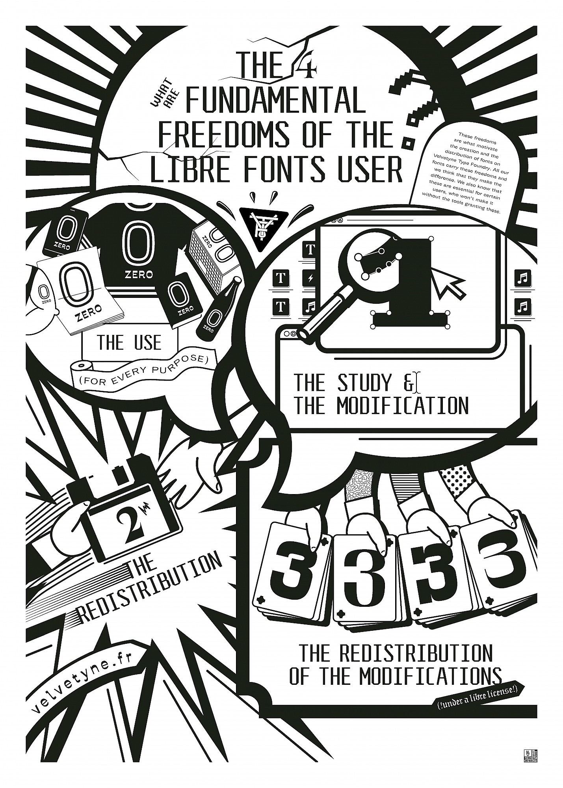[Fig.1].
On comprend donc que les deux premières libertés permettent un apport à l’individu, tandis que les deux dernières permettent un apport à la communauté. Si les quatre libertés sont respectées, nous pouvons considérer le programme comme un logiciel libre. Mais, s’il manque une de ces libertés, le logiciel n’est pas un logiciel libre. Il est donc considéré de la même manière qu’un programme propriétaire. Richard Stallman commença sa conférence Logiciels libres et Education en 2012 par l’essentiel du logiciel libre : liberté, égalité, fraternité9[9] Logiciels libres et Education, 2012. Ces mots résument l’idée de ce mouvement.
Licences libres
Nous pouvons nous demander : si le logiciel est libre pourquoi lui faut-il une licence ? En effet, lorsque le logiciel libre ainsi que sa documentation permettent l’accès à son code source qui peut être étudié selon les quatre libertés précédemment décrites, il nous oblige par conséquent à respecter sa licence. Le développeur d’un logiciel est censé signaler aux utilisateurs de son programme qu’il fait partie du monde libriste en appliquant une des licences libres. La licence libre permet d’éviter aux développeurs que leurs logiciels soient utilisés incorrectement. Cela assure également que le code source ne sera pas emprunté par un autre développeur pour être utilisé à des fins commerciales et de cette manière fermer le chemin de la liberté10[10] Williams, Sam. Free as in Freedom: Richard Stallman's Crusade for Free Software. Op.cit.. C’est donc pour cela que les logiciels libres ont besoin d’une licence, pour protéger les libertés des utilisateurs et des créateurs.
La plus simple solution pour rendre un logiciel libre est de le proclamer comme un logiciel du domaine public. Dans ce cas, il est a priori soumis à aucun copyleft. Mais malheureusement, cette méthode à un défaut car une personne peut encore privatiser le code source en créant un logiciel propriétaire sur la base d’un logiciel du domaine public. Le logiciel peut donc être volé par un intermédiaire11[11] Système d’exploitation GNU. « Licences ». Consulté le 11/08/2019.. C’est ce problème que les licences libres tentent de résoudre.
Les licences libres peuvent contenir ou non le copyleft. Le terme copyleft a été défini par Richard Stallman et il prend sa source du terme copyright12[12] Système d’exploitation GNU. « Licences. Qu'entend-on par "copyleft" ? ». Consulté le 11/08/2019. , où le copyright correspond à l’acte de propriété d’un logiciel ou d’une œuvre sans possibilités de le copier, de le distribuer ou de le modifier. En effet, dans le cadre du copyleft, les développeurs doivent d’abord proclamer que ce logiciel est sous copyright. Puis ils ajoutent les conditions de distribution et de modification qui assurent cette liberté. Les titulaires des droits utilisent cette conception afin d’offrir à chacun des utilisateurs la liberté d’utiliser, modifier et diffuser toutes dérivées de leur programme. L’article publié par Système d’exploitation GNU et intitulé « Licences » défini les relations entre les développeurs de logiciels privateurs et de logiciels libres comme : « Les développeurs de logiciel privateur utilisent le copyright pour priver les utilisateurs de leurs libertés. De notre côté, nous l'utilisons pour garantir ces libertés. Voilà pourquoi nous avons inversé le mot copyright (droit d'auteur) en copyleft (gauche d’auteur) »13[13] Système d’exploitation GNU. « Licences ». Op.cit. Dans ce cadre les utilisateurs qui voudraient les modifier sont obligés de laisser l’outil sous la même licence que le logiciel original.
La licence la plus répandue dans le milieu du libre est la licence GNU GPL (General Public License), en effet, plus de moitié des logiciels libres existants est sous cette licence. L’idée derrière ce projet était d’élaborer une licence qui pourrait protéger les droits des utilisateurs, des développeurs et des logiciels simultanément, tout en conservant son code source, sa distribution, ses droits de copie modifiée libre. Cette licence est utilisée souvent pour protéger non seulement les logiciels mais également les caractères typographiques et d’autres œuvres qui ont du code en eux14[14] Système d’exploitation GNU. « Licences commentées ». Consulté le 11/08/2019. . Le collectif des designers Open Source Publishing n’utilise que des logiciels libres dans son travail. Il distribue ces outils sous les licences libres également. Par exemple, l’outil libre de la mise en page HTML2PRINT [Fig.2]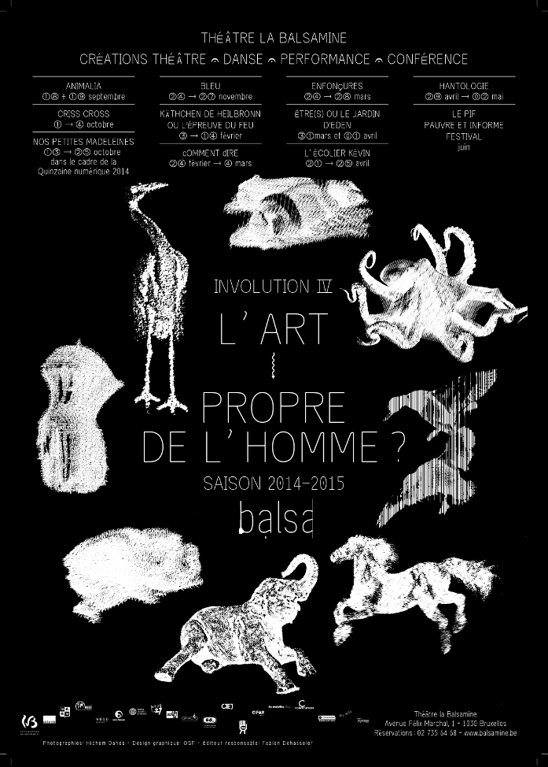[Fig.2] est distribué sous cette licence GNU GPL3. Les designers graphiques peuvent reprendre cet instrument pour créer leur mise en page ou le modifier pour améliorer et après distribuer sous la même licence libre.
En créant cette première licence, Richard Stallman nous a démontré qu’il est possible de créer des licences libres. Inspiré de cette culture libre et de deux mouvements free software et open source, Lawrence Lessig, Hal Abelson et Eric Eldred, en 2001 créent la licence Creative Commons qui désormais facilite le partage et l’échange des œuvres d’art mais aussi permet de faire évaluer la distribution d’une œuvre15[15] Wikipedia. « Creative Commons ». Consulté le 16/08/2019. . Cette licence en particulier peut être complétée par la licence GNU GPL dans le cadre d’un projet16[16] Système d’exploitation GNU. « Licences commentées ». Op.cit. La Licence Art Libre est une licence sous copyleft qui garantit la distribution des copies et des copies modifiées d’une œuvre d’art. En effet, à l’époque d’Internet et des logiciels open source, les artistes, notamment les designers, ont obtenu la possibilité de faire beaucoup d’échanges ce qui a influencé leurs méthodes de créations. Cette Licence Art Libre souligne particulièrement l’arrivée du travail collaboratif. La licence SIL Open Font License 1.1 est une licence libre élaborée pour les polices de caractères17[17] Système d’exploitation GNU. « FLOSS and FOSS ». Consulté le 12/08/2019.. En utilisant des licences pour des polices de caractères nous considérons le contenu du fichier numérique comme une œuvre et pas la conception artistique18[18] Système d’exploitation GNU. « Licences pour les polices de caractères ». Consulté le 15/08/2019. . Par exemple, Velvetyne et OSP-foundry utilisent cette licence pour leurs typographies.
Pour conclure, les licences sont essentielles pour le maintien des règles de l’idéologie libre. De cette manière, ce modèle permet aux utilisateurs d’avoir beaucoup plus de contrôle sur les programmes qu’ils utilisent que ce soit dans un but créatif ou personnel notamment car ces derniers ne récupèrent pas nos données. En effet si les utilisateurs ne contrôlent pas ce qu’ils utilisent, on obtient alors un programme ou plutôt une entreprise qui contrôle ses utilisateurs. Ce qui nous amène aux changements que souhaite apporter le logiciel libre à la société.
Le savoir est le pouvoir ?
Richard Stallman proclamait dans son article « Le logiciel libre est encore plus essentiel maintenant »19[19] Stallman, Richard. « Le logiciel libre est encore plus essentiel maintenant ». Consulté le 13/07/2019. publié sur le site de projet GNU:
« Si les utilisateurs ne contrôlent pas le programme, le programme contrôle les utilisateurs. Avec le logiciel privateur, il y a toujours une entité, le développeur ou le "propriétaire" du programme, qui en a le contrôle et qui exerce par ce biais un pouvoir sur les utilisateurs. Un programme non libre est un joug, un instrument de pouvoir injuste ».
Il montrait alors la politique de puissance qui règne dans le milieu du développement des logiciels. On peut alors se demander en quoi ce contrôle est incorrect ? Tout d’abord, nous devons bien distinguer un logiciel libre d’un logiciel privateur. La principale différence entre ceux-ci est le modèle économique. En effet, alors que les logiciels privateurs sont avant tout des logiciels destinés à être vendus, les logiciels libres eux ne présentent pas cette contrainte. Cette tendance de vendre les logiciels est maintenant tout à fait normal pour notre société et est rarement remise en question. Il existe plusieurs raisons de cette tendance.
Premièrement, au sein du modèle économique contemporain, les logiciels deviennent des atouts précieux et les sociétés qui les développent ne peuvent plus donner leur code source à tout le monde, particulièrement si un logiciel apporte une formidable avancée technologique à la société. En effet, si le code était ouvert, les concurrents pourraient le copier pour l’utiliser à leurs propres fins commerciales. C’est pourquoi, les licences qu’utilisent ces logiciels garantissent que le code source reste fermé. Le vrai problème est que ce modèle n’a pour objectif que de défendre le bénéfice et restreint au contraire l’avancée technologique. Pourtant, il ne faut pas comparer le logiciel libre et le logiciel privateur seulement sous leur aspect monétaire puisque certains programmes privateurs sont disponibles gratuitement, comme par exemple Flash Player. Dans tous les cas, les développeurs de ces programmes ont tout de même du pouvoir sur les utilisateurs. Ce pouvoir s’exerce par le contrôle des choix dans les actions d’utilisateurs. Cela se fait grâce à différentes méthodes, nous pouvons penser notamment à l’utilisation du programme Flash Player qui est essentiel au bon fonctionnement de certains sites web et qui rend le créateur du {site web} par ce fait dépendant de l’outil qu’il utilise. Or, en ne connaissant pas le code source du programme on peut imaginer les problèmes que cela peut provoquer sur le site si l’éditeur décide de modifier ou pire de supprimer ce logiciel.
Deuxièmement, l’ultra-connexion de toutes les sphères de la vie quotidienne avec les technologies automatisées permet au grand public de ne pas avoir à penser à la complexité du fonctionnement des technologies, des appareils électroniques et des réseaux informatiques qu’ils utilisent. Ayant conscience de ce phénomène, les fournisseurs de logiciels ferment l’accès au code source qui n’est plus nécessaire, puisque incompréhensible pour la plupart des utilisateurs. Le fait de rendre le code source inaccessible est contre-productif, en effet cela ne permet pas de comprendre la construction du logiciel et ainsi pouvoir mieux l’utiliser. De plus, cet aspect peut potentiellement restreindre l’avancées technologiques puisqu’un utilisateur aventureux aurait pu apporter des nouveautés. Au contraire, le logiciel libre par l’ouverture de son code source invite les utilisateurs à le modifier, même si l’utilisateur n’a pas assez de compétences pour configurer ses propres outils. Par conséquent, le monde libriste20[20] Stallman, Richard. « Le logiciel libre est encore plus essentiel maintenant ». Consulté le 13/07/2019. reste toujours très ouvert pour l’apprentissage et pour la collaboration. De plus, je considère que la collaboration est la bonne méthode à utiliser pour faciliter le développement technologique puisque le partage des codes sources favorise la création de logiciels mieux réfléchis, car ils sont élaborés par plusieurs personnes. Cette réflexion nous mène donc à l’idée que « le savoir est le pouvoir »21[21] Ibid. le marché du logiciel devient l’arène où le gagnant obtient tout. Par conséquent, les logiciels propriétaires ont sous leur contrôle les développeurs et leur compétence car les logiciels ne sont pas modulaires. Cependant, les utilisateurs sont obligés de se conformer au fonctionnement et à l’architecture d’un logiciel sans pouvoir le modifier (en effet, les logiciels libres ont souvent la possibilité d'accueillir des extensions développées par la communauté).
Par opposition à ce modèle industriel, les designers graphiques désirants atteindre la liberté totale, et ainsi pouvoir maîtriser leurs outils, dans la gestion de leurs projets, se voient contraints de trouver une alternative. Celle-ci contribuera par la même occasion à renverser cette politique inéquitable et permettra aux designers graphiques de devenir les vrais propriétaires de leurs projets. Cela devient tout à fait possible grâce à l’utilisation du code source, issu des logiciels libres et étudiables. En effet, les utilisateurs en ayant accès à un logiciel libre acquièrent une réelle liberté. Cette dernière s’exprime par le fait que ces derniers ne sont pas soumis à une récolte de leurs données mais aussi qu’ils ne sont pas considérés seulement comme des consommateurs car ils peuvent être aussi les acteurs du logiciel. C’est-à-dire qu’ils ont la possibilité de le modifier. Ainsi, le designer graphique qui privilégie les outils libres aux logiciels privateurs, passe d’un utilisateur ordinaire de logiciel à un créateur de son propre projet sur mesure.
Pour finir, on observe une commercialisation du savoir amené par l’industrialisation de la production du logiciel qui restreint la créativité du designer graphique. On comprend donc que le savoir est le pouvoir. Alors si le logiciel privateur est le pouvoir, le logiciel libre est le contre-pouvoir. En effet, le logiciel libre libère le savoir en le rendant accessible à tous et permet par conséquent au designer une réappropriation de son propre travail. Grâce à cette liberté le designer peut ainsi laisser libre cours à son imagination et ainsi peut expérimenter comme il le souhaite que ce soit dans ses créations ou ses méthodes de création.
EXPERIMENTATION CONTINUE
« Ce qui caractérise le Libre n’est donc pas une forme de "bazar", mais la construction empirique de l’organisation collective au plus près des exigences de la pratique. Il n’y a pas à proprement parler de modèle organisationnel du Libre. Il y a une méthode, fondamentalement expérimentale et liée à la valorisation de l’apprentissage par le faire. Être libre d’expérimenter, c’est pouvoir se tromper, découvrir ce dont on ne soupçonnait pas l’existence et arriver là où on n’aurait pas été conduit. C’est être capable de bricoler les technologies, de réviser les agencements collectifs et de se réapproprier certains savoirs confisqués par leur incorporation dans des structures de pouvoir. C’est tenter de concilier le maintien d’une autonomie individuelle forte avec les réquisits d’une action collective efficace. »23[23] Broca, Sebastien. Utopie du logiciel libre. Neuvy-en-Champagne : le passager clandestin, 2013. p.266
Designer = hacker
Il y a environ 40 ans, grâce à son penchant pour la liberté individuelle et la liberté d’expression, la culture hacker a permit la naissance de la culture libre. En 1994, le journaliste Steven Levi dans son ouvrage Hackers, énonçait les principes et l’éthique de la culture hacker. Il sépare l’éthique hacker en 6 préceptes : l’accès illimité aux ordinateurs, la défense de la liberté de l’information, l’anti-autoritarisme, la méritocratie, la revendication d’une esthétique de la programmation et le progressisme de l’informatique.
De plus, il définissait les trois valeurs principales de hacker : l’autonomie, la créativité et la libre circulation des données24[24] Levy, Steven. Hackers. Delta Publishing, 1994. p.38.. Depuis presque 30 ans, les hackers continuent à défendre les quatre libertés de Richard Stallman. Ils accordent toujours une grande importance à l’éthique, reléguant à l’arrière-plan les perfectionnements techniques et le bénéfice matériel. Ils rejètent la consommation marchande car elle est créatrice de dépendance. Au contraire, ils préfèrent suivre leur propre chemin en créant des logiciels libres. On constate que l’émancipation25[25] Broca, Sebastien. Utopie du logiciel libre. Op.cit. p.24 est le moteur de la culture hacker, chaque membre de cette communauté vise la : « […] réalisation de soi, mais aussi en termes de partage et de redistribution des richesses »26[26] Ibid. p.130. Selon les programmeurs, le hacker signifie littéralement la maîtrise, par d’autres mots, c'est la personne qui peut obliger un ordinateur à faire tout ce qu’elle veut même si l’ordinateur ne le veut pas27[27] Graham, Paul. « The Word "hacker" ». Consulté le 22/05/2019.. Cette pratique a trouvé résonance parmi les designers graphiques. L’histoire de la culture libre commença par un incident au MIT, lorsque avec l’imprimante Xerox, Richard Stallman n’a pas réussi à modifier le code source qui pouvait l'aider à gérer les problèmes de bourrage papier. Puis presque 40 ans après, le collectif de design graphique Bonjour Monde a proposé de repenser cette histoire au sein d’un atelier Gutenbug [Fig.3]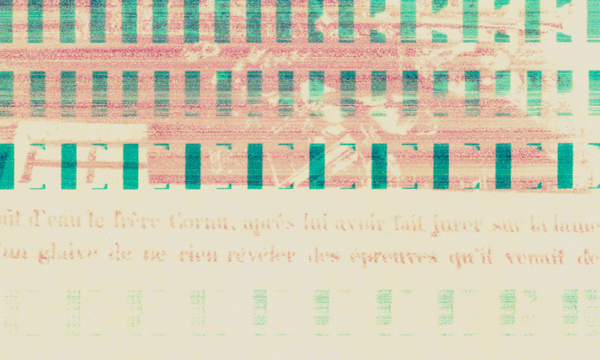[Fig.3] passé aux Grands Voisins à Paris en 2017. L’imprimante jet-d’encre ne représente plus un simple appareil de sortie, et devient un instrument de création. En étant reconfigurée et bidouillé28[28] Bidouillabilité est un nom féminin, traduction du terme anglais Hackability. Capacité – pour un objet technique ou un outil – à être détourné de sa vocation initiale en vue d'essayer de lui trouver de nouveaux usages. Consulté le 04/08/2019. par les designers, elle commence à produire des bugs, voir des nouvelles formes29[29] Bonjour Monde. « Gutenbug ». 2017. Consulté le 23/08/2019.. Cette exemple montre comment les designers graphiques peuvent bricoler leur instrument à partir de machines simples. La connaissance des technologies et l’esprit émancipateur et aventurier ont permis cette collaboration entre designer et outil. Désormais, le designer ne suit plus des idées proposées par le marché, il essaye de trouver ses instruments qui lui permettent de construire un projet indépendant. Par ailleurs, il est intéressant de remarquer que le mot anglais hack signifie deux sens opposés : ce terme signifie à la fois ugly solution (mauvaise solution) et imaginative solution (solution imaginative). De cette manière, Paul Garham, hacker, s’interroge sur le mot hack. Selon lui, ces deux approches ont un point commun : « elles enfreignent, toutes les deux, les règles. Et il y a un continuum graduel entre l'infraction aux règles qui est simplement laide (utiliser du ruban adhésif en toile pour attacher quelque chose à votre vélo) et l'infraction aux règles qui est brillamment imaginative (jeter l'espace euclidien) »30[30] « And there is a gradual continuum between rule breaking that's merely ugly (using duct tape to attach something to your bike) and rule breaking that is brilliantly imaginative (discarding Euclidean space) ». Graham, Paul. « The Word "Hacker" ». Consulté le 22/05/2019..Ce point de vue ouvre encore plus le champ du logiciel libre à un côté expérimental. Il n’existe pas de bonne solution, chaque nouvelle méthode apporte une décision novatrice grâce à la modularité des outils à l’infini.
L’esprit hacker émancipatrice du designer correspond également à un travail collaboratif au sein duquel les designers partagent leur code source. Les designers s’approprient ce code, les modifient et les réutilisent dans leurs projets. De cette manière, en plus de personnaliser leurs éditions, ils diffusent à leur tour les codes modifiés. Le travail collaboratif qui était abordé par la culture libre, grâce à internet a permis de rapprocher les designers. En effet, la collaboration entre tous les participants du champ éditorial dote la structure de liens très puissants car chacun partage et distribue pour le mieux. Chaque participant offre un outil ou une idée qu’ils transforment ensemble. De plus, cela favorise l’établissement de relations sans hiérarchie. Par ailleurs, les logiciels de code proposent beaucoup de solution pour travailler avec plusieurs personnes ensemble comme Atom et ou par exemple Etherpad. De cette manière, l’édition du livre devient un espace de collaboration et d’expérimentation.
Par exemple, l’outil Ethertoff [Fig.4]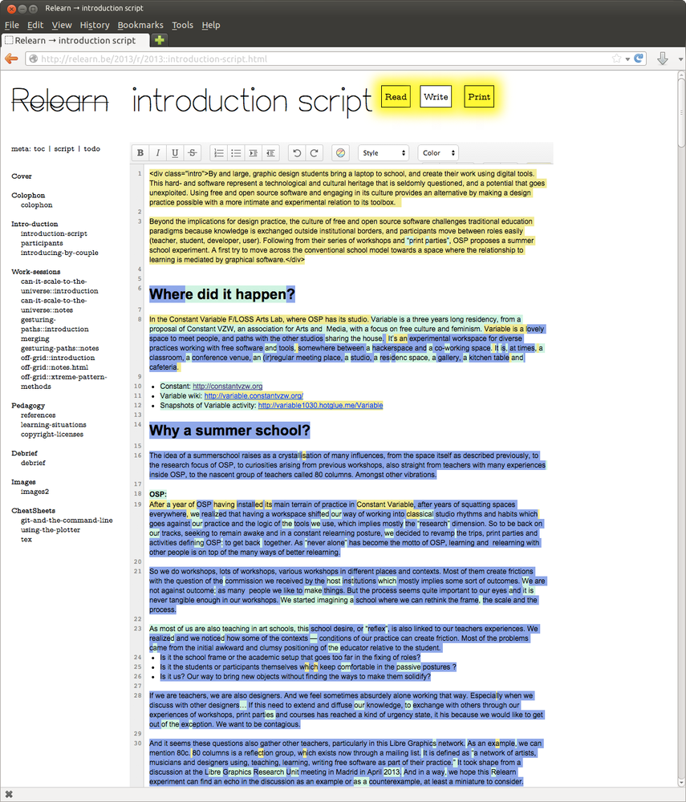[Fig.4] qui a été élaboré par le collectif Open Source Publishing, représente une plateforme collaborative à la base d’Etherpad. Cette plateforme ressemble à {wiki} mais avec la possibilité de travailler en coopération en temps réel. Ethertoff est structuré comme un wiki servant à ses utilisateurs une extension permettant d'écrire en temps réel. Les données sont hébergées sur le même domaine que Etherpad ce que permet de faire les rédactions comparativement sur Etherpad Lite. Le framework Django permet d’intégrer le contenu sur la plateforme. {HTML}, {CSS} et {Javascript} permettent de réaliser la version d’écran et la version imprimée31[31] Open Source Publishing. « Ethertoff ». Consulté le 22/05/2019.. À travers cette exemple, nous pouvons voir l'intégration du code source d’un logiciel libre qui a été utilisé pour la création d’un autre logiciel répondant davantage aux besoins du collectif Open Source Publishing.
Par ailleurs, Ethertoff est utilisé par la maison d’édition < o > future < o > composée des designers graphique Coline Sunier et Charles Mazé. En effet, ils ont repris cette plateforme collaborative afin de faire des mises en pages et d’imprimer leurs éditions et leurs articles, par exemple l’extrait d’ouvrage Le Classisme : une introduction de Edward W. Saïd et Joe Scanlan. Cette ouvrage a été publié en ligne sur son site et puis mise en page avec CSS via sa version numérique [Fig.5]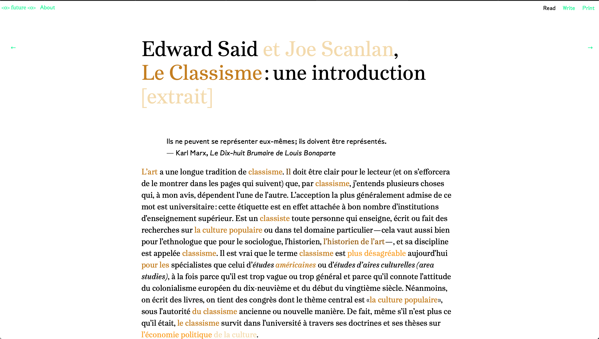[Fig.5]. En conséquence, les designers s’inscrivent dans une boucle de partage où l’individualité de chaque designer fait partie de l’intelligence collective. Selon Sebastien Broca, cette boucle contribue à la création de meilleurs outils32[32] Broca, Sebastien. Utopie du logiciel libre.Op.cit. p.67-79
En s’inspirant de la culture hacker, une nouvelle philosophie émerge chez les designers graphiques. Ils veulent être libre dans leurs choix. S’imprégner de la culture hacker est propice à développer une attitude libertaire et autonome. Cette liberté est moteur de création et d’expérimentation. Comme le résume Raphaël Bastide, « l’utilisation d’outils "alternatifs" apparaît comme un champ d’exploration particulièrement riche, avec ses méthodologies encourageant le travail collaboratif et le partage d’expérience »33[33] Workshops libres. Entretien avec OLA. Back Office n°1. Consulté le 24/05/2019.. L’objectif du designer est d’atteindre une autonomie dans le processus du travail avec toutes les obligations contemporaines et commercialisées, ainsi que la collaboration avec les autres. C’est la vrai éthique des libristes. De cette manière «un graphiste-hacker pourrait créer ses programmes à sa main, pour répondre à ses exigences propres, lesquelles participent de son statut d’auteur »34[34] Graphisme en France, 2012.Consulté le 20/07/2019..
liberté individuelle
Comme il était susmentionné dans la première partie, les programmes privateurs ne donnent pas autant de flexibilité pour gérer le projet : tout est déjà prévu, le programme est déjà parametrisé selon les standards préétablis. En effet, une très large majorité des graphistes utilise particulièrement les logiciels propriétaires comme par exemple la suite Adobe (Illustrator, InDesign, Photoshop). Le contrôle du processus graphique est évident dans ces logiciels propriétaires. Si nous regardons le menu de tous les logiciels de la suite Adobe, nous remarquons que le menu est assez séquentiel : un onglet ouvre des actions qui proposent d’autres actions à son tour, le texte est complété par des pictogrammes. Ce modèle donne naissance à un processus de travail standardisé. Antony Masure souligne que le défi des logiciels propriétaires est « […] de donner l’idée au grand public que la création est quelque chose de facile, par la navigation sans effort parmi des galeries d’images lissées ». Avec tels logiciels n’importe qui peut être le designer puisque désormais le processus de travail ne dépend plus de la volonté créative d’un graphiste mais le travail représente un processus de choix des scénarios présélectionné par Adobe35[35] Masure, Anthony. « Adobe : le créatif au pouvoir ». Consulté le 26/09/2019.. De cette façon, le designer risque de perdre ses propres repères novatrices[Fig.6-7]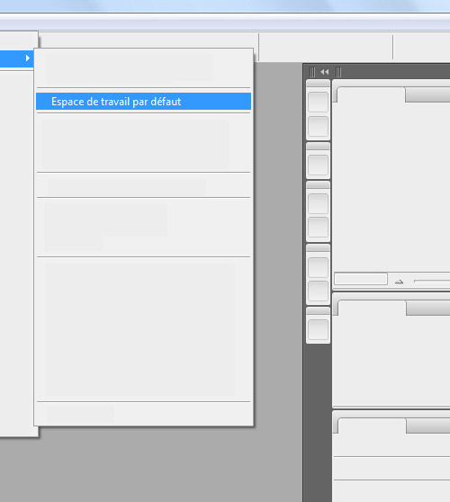[Fig.6-7].
Le véritable défi d’un logiciel, libre ou privateur, est de pouvoir convenir à la vie professionnelle des designers graphiques. Ces derniers attendent des outils performants et novateurs. Les logiciels libres ont un train de retard, bien qu’ils s’efforcent d’être innovants. Ce retard s’explique par les deux principes du processus de création d’un outil libre. Premièrement, repartir à zéro et ne pas copier ce qui existe déjà. Deuxièmement, répondre à la demande des utilisateurs. Le tout étant ergonomique, esthétique, utile et fluide. En effet, il est important pour un logiciel d’être ergonomique et c’est en partie à cela que sert le design qui « […] n’est pas seulement destiné à construire l’experience, comme toutes les activités techniques. Il est destiné à enchanter l’experience »36[36] Vial, Stephan. L’être et l’écran. Comment le numérique change la perception. PUF, 2017. p.199. Mais, parce qu’un logiciel ergonomique n’est pas forcément beau, le design sert donc à rendre un logiciel beau, lorsque l’on ajoute des animations à un site web par exemple ce dernier devient immédiatement plus intéressant. Cela nous mène donc également au concept de l’outil convivial abordé par Ivan Illich. Selon lui, l’outil convivial est un outil « qui me laisse la plus grande latitude et le plus grand pouvoir de modifier le monde au gré de mon intention »37[37] Illich, Ivan. La convivialité. p.44. En effet, l’outil doit être compréhensible aux personnes, il doit être facile à comprendre pour tout le monde et le design participe à cela en rendant ergonomique un site web c’est à dire en le rendant compréhensible pour la majorité des utilisateur tout en le rendant « accueillant » c’est à dire avec un design moderne qui ne rebutera pas l’utilisateur commun. Une tâche complexe qui les rend, hélas, inférieurs aux logiciels privateurs. De plus, son code source doit être intuitif afin qu’un designer-développeur puisse étudier ce code sans trop de difficulté. Alors, dans cette optique, la bienveillance des logiciels libres, à l’inverse des logiciels privateurs, ouvre un grand champ créatif pour les designers graphiques. Alexandre Leray, designer graphique dans le collectif Open Source Publishing, donne dans l’entretien pour Annick Lantenois et Alexandre Dimos, deux désavantages des logiciels privateurs. Premièrement il s’agit de « leur écriture [qui] est souvent dictée par des considérations marketing ». En effet, de tels logiciels peuvent être parfaits dans leur fonctionnalité mais Leray souligne que ces derniers « reflètent l’usage du plus grand nombre ». Par contre, les logiciels libres eux, sont destinés à des tâches spécifiques et particulières qui viennent de l’initiative d’une personne. C’est pourquoi, selon Alexandre Leray « le logiciel libre permet donc une plus grande diversité d’outils et d’approches »38[38] Lantenois, Annick. Lire à l’écran. École supérieure d’art et design Grenoble -Valence et Édition B42, 2011. p .107. Par conséquent, les designers graphiques sont voués au développement de projets au processus de création similaire établi par un logiciel propriétaire. Sous cette condition, ils ne peuvent donc pas définir par eux-même la façon dont il procéderont pour effectuer leur projet. Ce qui rend le processus de création passif puisque ne demandant aucune recherche préalable. Deuxièmement, « les logiciels privateurs fonctionnent en circuit fermé. La suite logicielle d’Adobe en est un exemple : les logiciels qui la composent communiquent merveilleusement bien entre eux mais n’autorisent pas ou difficilement la connexion à d’autres outils »39[39] Ibid. C'est pourquoi le designer graphique se pose les questions : Comment peut-il créer un projet unique en fonction de ses choix ? Comment peut-il atteindre sa liberté individuelle et son indépendance ?
L’outil ne doit pas influencer sur le choix de designer graphique pour qu’il puisse obtenir le projet de qualité40[40] Donnot, Kévin. « Code=Design ». Code X n°1. Édition HYX, 2017. p.9. L’intérêt des designers graphiques pour les logiciels libres peut être expliqué par son écosystème graphique qui est présenté par le code source. Lors de l’entretien avec Annick Lantenois publié dans l’ouvrage Lire à l’écran Alexandre Leray confirme41[41] Lantenois, Annick. Lire à l’écran. Op.cit. p.105 :
« Le libre nous semble donc être le choix naturel vers lequel se tourner car il garantit à chacun l’accès au code source, et donc potentiellement à se réappropriation. C’est en soi une affirmation radicale. Simplement par son usage, le logiciel libre a tendance à s’exposer, à afficher sa matérialité, à rendre visible sa construction ».
En effet, la manière de construire son projet à l’issue de l’exécution du code source permet aux designers graphiques d’effectuer une étude de son usage et de sa maitrise de ses propres instruments et donc de leur offrir un meilleur contrôle de leurs projets. Ils obtiennent par la suite un résultat plus réfléchi. Cela devient possible grâce à l’utilisation du code source, issu des logiciels libres et étudiables. En effet, les designers graphiques peuvent maîtriser leurs vies par la maîtrise de leurs logiciels car ils ne sont pas limités dans leur création et peuvent ainsi s’exprimer librement. C’est pourquoi le designer graphique en personnalisant ses outils et en leur ajoutant de nouvelles fonctions par le code informatique atteint la liberté individuelle42[42] Casey Reas & Chandler McWilliams. « Programmer avec Erik van Blokland, Catalogtree, Amanda Cox, Nicholas Felton, FIELD, LUST, Boris Müller, onformative, Jonathan Puckey, Sosolimited et Trafik ». Graphisme en France, 2012. p.25.Consulté le 18/05/2019. qui répond à leur statut de créateur. Jeroen Barendse, dans son texte intitulé « La fin du mot tel que nous le connaissons », publié dans l’ouvrage Voir l’architecture43[43] Barendse, Jeroen. « La fin du mot tel que nous le connaissons ». Voir l’architecture. Contribution du design à la consommation des savoirs. B42, 2012, il parle de la nécessité de savoir coder car la coopération entre designers et développeurs peut donner naissance aux meilleurs projets :
« Les designers doivent, au minimum, être en mesure de comprendre les possibilités qu’offre la programmation, et mieux encore, savoir programmer eux-même. Nombre des meilleurs exemples de publication numérique sont nés d’une étroite collaboration entre des designers et des développeurs, et ce tout au long du processus de design. Bien entendu, cela entraine une redéfinissions de nos rôles traditionnels, et certaines disciplines qui étaient établies depuis des décennies s’en trouvent alors démantelées ou étendues. »
En effet, le domaine issu des autres domaines différents et complémentaires permet l’approche transversale qui, à son tour, donne une collaboration fructueuse.
Vers la modularité
La question des outils utilisés dans son travail est posée à chaque designer. Ici, la réponse dépend de plusieurs contextes, qui sont définis par le designer lui-même. De plus, l’émancipation des outils existants et traditionnels sont liés au fait que tous les projets réalisés sur un logiciel se ressemblent de par leur création. Les techniques et les tendances favorisent la recherche de logiciels permettant de s’exprimer librement. Le design créé à l’aide d’outils numériques libres permet de configurer multiples séquences possibles, qui construisent à leur tour le système solide dynamique grâce à leur structure en bloc44[44] Schumacher, Patrik. « Parametricism as style - parametricist manifeste ». Consulté le 07//10/2019.. Dans cela il s’agit du principe de la modularité qui est présenté dans le travail avec les logiciels libres. Antoine Fauchié définit ce terme de la modularité comme la possibilité d’ajouter des nouvelles briques à n’importe quel moment de la création d’un projet. Cela permet un processus graphique qui consiste en un grand nombre de modules représentés par des outils de mise en page et de leurs extensions, des plateformes collaboratives, des langages du code, des polices de caractères et d’autres instruments numériques accessibles librement. Cette tendance vers la modularité, on peut éxpliquer de manière suivante45[45] Fauchié, Antoine, Parisot, Thomas. « Repenser les chaînes de publication par l’intégration des pratiques du développement logiciel ». Science du Design n°8. 2018. p.51 :
« L’environnement réunissant des acteurs spécialisés mais isolés les uns des autres laisse place à l’écosystème modulaire dont les éléments rétroagissent entre eux. Ce mode d’organisation permet une souplesse d’adaptation face aux événements extérieurs et aux logiques financières. Ce n’est donc pas seulement d’un changement d’outil dont il est question, mais bel et bien d’un changement de culte. »
Dans ce système chaque élément porte une fonction importante qui permet la fluidité de toutes les étapes de travail où chaque bloc/ligne de code est prédéterminant. Désormais, notre environnement de travail représente un terrain libre, avec une multitude de choix. Le designer graphique choisit son chemin individuel en fonction des outils utilisés. C’est pourquoi l’utilisation des outils indépendants, qui sont utilisés par le designer graphique, permet d’innover davantage. Ainsi, le designer peut choisir les instruments dont il a besoin pour effectuer un projet riche et intéressant. S’intéresser aux outils libres est enrichissant, puisqu’ils permettent de travailler de façon expérimentale et permettent diverses possibilités de construction à partir d’outils déjà existants. De plus cela contribue au contrôle absolu qui peut être effectué par le designer sur tous les outils qu’il décide d’utiliser dans son travail.
Processing est un bon exemple d’{application} libre pour les designers qui supporte cette idée
d’indépendance modulaire. Ce langage a été créé par les designers pour les designers[Fig.8] [Fig.8]. De plus, Processing est assez simple et son usage est
intuitif. Tout est fait pour accélérer le travail du designer, mais en même temps lui donner beaucoup de
potentiel créatif. C’est un outil libre et pas seulement un langage. Chaque personne intéressée par la création
peut améliorer le programme. Cet aspect apporte un enjeu éducatif pour les non-programmeurs, car cela permet
d’apprendre le code. C’est pourquoi nous pouvons trouver beaucoup de bibliothèques de code qui sont partagées
par la communauté. Le grand avantage de ce langage est l’ouverture de cette application, sous n’importe quel
système, car le fichier représente un document indépendant47[47]
Processing. Consulté le 18/05/2019. Cette tendance des outils libres contribue à la fondation du système
riche et modulable, adaptable aux mutations externes. La structure modulaire du processus de travail permet une
construction flexible des étapes d’un projet. Désormais, le designer graphique peut varier ses outils en
fonction de l’exigence d’un format spécifique d’édition, d’un processus particulier de travail ou l’envie
d’avoir un résultat unique.
[Fig.8]. De plus, Processing est assez simple et son usage est
intuitif. Tout est fait pour accélérer le travail du designer, mais en même temps lui donner beaucoup de
potentiel créatif. C’est un outil libre et pas seulement un langage. Chaque personne intéressée par la création
peut améliorer le programme. Cet aspect apporte un enjeu éducatif pour les non-programmeurs, car cela permet
d’apprendre le code. C’est pourquoi nous pouvons trouver beaucoup de bibliothèques de code qui sont partagées
par la communauté. Le grand avantage de ce langage est l’ouverture de cette application, sous n’importe quel
système, car le fichier représente un document indépendant47[47]
Processing. Consulté le 18/05/2019. Cette tendance des outils libres contribue à la fondation du système
riche et modulable, adaptable aux mutations externes. La structure modulaire du processus de travail permet une
construction flexible des étapes d’un projet. Désormais, le designer graphique peut varier ses outils en
fonction de l’exigence d’un format spécifique d’édition, d’un processus particulier de travail ou l’envie
d’avoir un résultat unique.
Par ailleurs, les designers impliqués dans cette structure modulaire, se trouvent sous l’influence de la création
qui à son tour, les encourage aux expérimentations à volonté avec les outils. Par exemple, le groupe des
designers bruxellois Luuse a réalisé la conception de flyers et d'un catalogue pour la galerie Constant [Fig.9] [Fig.9]. Ce projet représente un exemple de travail combinatoire en
cadre des logiciels libres. Les designers utilisent plusieurs instruments numériques différents pour créer
l’édition imprimée. Le dessin des caractères a été réalisé grâce au langage Metapost. C’est un langage pour la
création des illustrations. En effet, il permet de dessiner des lignes vectorielles qui à son tour peuvent
reprendre une forme complète, notamment la forme d’une lettre48[48]MetaPost on the Web. « What is MetaPost ? ». Consulté le 10/09/2019..
Metapost a été intégré dans l’outil de la mise en page HTML2Print élaboré par le collectif des designers Open
Source Publishing. Cet outil libre permet la mise en page sous HTML, less / CSS и Javascript / Jquery et puis,
l’impression à partir de {navigateur web} 49[49] Open Source Publishing. « HTML2PRINT ». Consulté le 28/06/2019..
[Fig.9]. Ce projet représente un exemple de travail combinatoire en
cadre des logiciels libres. Les designers utilisent plusieurs instruments numériques différents pour créer
l’édition imprimée. Le dessin des caractères a été réalisé grâce au langage Metapost. C’est un langage pour la
création des illustrations. En effet, il permet de dessiner des lignes vectorielles qui à son tour peuvent
reprendre une forme complète, notamment la forme d’une lettre48[48]MetaPost on the Web. « What is MetaPost ? ». Consulté le 10/09/2019..
Metapost a été intégré dans l’outil de la mise en page HTML2Print élaboré par le collectif des designers Open
Source Publishing. Cet outil libre permet la mise en page sous HTML, less / CSS и Javascript / Jquery et puis,
l’impression à partir de {navigateur web} 49[49] Open Source Publishing. « HTML2PRINT ». Consulté le 28/06/2019..
Un autre projet qui montre le mode modulaire du travail est un projet éditorial pour l’exposition Tous, des
sang-mêlés. Figures Libres a présenté le catalogue de l’exposition passé à MACVAL en 2017 [Fig.10] [Fig.10]. La mise en page de ce catalogue a été effectuée grâce aux
logiciels libres et aux langages du code. Par ce projet, les designers voulaient montrer l’hybridation des
formes dans le numérique et la possibilité de varier des outils pour mettre en lumière cette mutation des
formes. Cet objet modulable, multipliant les approches, génère plusieurs lectures différentes. Le contenu sur
markdown est converti en HTML pour continuer la mise en page avec HTML2PRINT50[50] Code X n°1. Édition HYX, 2017. p.6. Ces projets
montrent comment les langages du code qui peuvent être intégrés l’un dans l’autre, forment une séquence
interminable des étapes de la création. De cette manière, les designers varient leurs outils selon leurs besoins
et le procédé graphique intéressé pour un projet concret cela offre l’indéterminé de tout processus du travail.
Désormais, le dialogue entre designer et son outil offre un mode de travail combinatoire qui est plein de
résultat expérimental car comme c’était remarqué par Kevin Donnot dans son article « Code = Design » que « le
code est une matière à modeler comme peut l’être un pain de terre glaise ou un bloc de texte »51[51] Donnot, Kévin. « Code=Design ». Code X n°1. Édition HYX, 2017. p.9
[Fig.10]. La mise en page de ce catalogue a été effectuée grâce aux
logiciels libres et aux langages du code. Par ce projet, les designers voulaient montrer l’hybridation des
formes dans le numérique et la possibilité de varier des outils pour mettre en lumière cette mutation des
formes. Cet objet modulable, multipliant les approches, génère plusieurs lectures différentes. Le contenu sur
markdown est converti en HTML pour continuer la mise en page avec HTML2PRINT50[50] Code X n°1. Édition HYX, 2017. p.6. Ces projets
montrent comment les langages du code qui peuvent être intégrés l’un dans l’autre, forment une séquence
interminable des étapes de la création. De cette manière, les designers varient leurs outils selon leurs besoins
et le procédé graphique intéressé pour un projet concret cela offre l’indéterminé de tout processus du travail.
Désormais, le dialogue entre designer et son outil offre un mode de travail combinatoire qui est plein de
résultat expérimental car comme c’était remarqué par Kevin Donnot dans son article « Code = Design » que « le
code est une matière à modeler comme peut l’être un pain de terre glaise ou un bloc de texte »51[51] Donnot, Kévin. « Code=Design ». Code X n°1. Édition HYX, 2017. p.9
Etre libre d'experimenter
Apprendre
La modularité permet aux logiciels libres d’ouvrir un large terrain d’expérimentation pour les designers graphiques qui veulent être des créateurs indépendants. En effet, l'ensemble de ces outils, en possession des designers, permet une multitude d’utilisation en fonction des besoins, ce qui permet de varier les procédés graphiques. Le designer choisit son outil ou le langage de programmation qui lui paraît le plus approprié. Par ailleurs, si on veut expérimenter, on ne doit pas s’arrêter juste parce qu’on ne connaît pas un logiciel car comprendre un logiciel permet de compléter ses connaissances et ainsi produire des projets mieux finis. Les outils libres permettent cela grâce à l’ouverture de leur code source. En effet, l’apprentissage occupe la place importante dans l’expérimentation puisque la notion d’apprendre est liée avec le pouvoir de découvrir de nouvelles choses, les tenter et la possibilité de se tromper. De plus, le vrai apprentissage n’est possible qu’en pratiquant véritablement les logiciels52[52] Broca, Sebastien. Utopie du logiciel libre. Op.cit. p.136. Pour cette raison, la culture libre joue un rôle important dans l’apprentissage qui est indissociable de ces nouvelles technologies. Les designers peuvent alors se poser la question suivante : comment est-il possible de developper des projets novateurs s’il est impossible d’étudier les technologies déjà existantes pour les comprendre et les améliorer ? Richard Stallman53[53] Stallman, Richard. « Le logiciel libre est encore plus essentiel maintenant ». Consulté le 07/09/2019. décrit ce problème par les mots suivants :
« Un programme libre vous permet de le bricoler pour lui faire ce que vous voulez (ou cesser de faire quelque chose qui vous déplaît). L'idée de bricoler le logiciel doit vous paraître ridicule si vous avez l'habitude des boîtes noires du logiciel privateur, mais dans le monde du Libre c'est courant, et c'est une bonne façon d'apprendre à programmer. »
En effet, un des enjeux du logiciel libre est d’apprendre et d’échanger entre les personnes intéressées par cette approche. Open Source Publishing est un collectif de design graphique qui est composé de personnes ayant différentes pratiques et expériences comme la cartographie, la typographie, le design graphique, l’écriture, la programmation, les mathématiques et la performance. Ils utilisent dans leur création de projets uniquement des outils avec un code source ouvert. Donc, ils proposent à chaque personne qui est intéressée par ce sujet à participer au développement d’outils. OSP fait des publications de tous ses projets et workshops sur son site et met des dossiers sur GitHub à la disposition des autres designers54[54] Open Source Publishing. « About ». Consulté le 28/07/2019.. Ainsi, le partage des outils favorise l’apprentissage.
Bricoler
Comprendre les technologies favorise une nouvelle forme de design qui naît entre le designer graphique et le programmeur, entre la recherche de forme et le code informatique. En outre, la réflexion sur le nouveau rôle du designer graphique et sa nouvelle façon modulaire de gérer le projet permettent la naissance de nouvelles expérimentations. Il est possible de configurer plusieurs outils ensemble car le code est assez flexible : « il fonctionne à la manière de briques Lego dont l’imbrication permet de créer de nouvelles combinaisons, elles-mêmes réutilisables » 55[55] Lantenois, Annick. Lire à l’écran. Op.cit. p.107. Cette possibilité permet à l’outil de présenter le bloc du code. Cette pratique peut être ouverte à tout le monde puisque chaque utilisateur d’un ordinateur peut produire ses propres hybridations du code et obtenir une nouvelle œuvre visuelle. L’exemple le plus simple de l’expérimentation avec le code source que nous pouvons réaliser est la modification du code qui compose une image qui se realise de la manière suivante : il faut changer l’extension du fichier image par .txt et de cette manière, le « bricoleur » obtient l’accès au code source et peut le modifier. Puis, il faut ajouter quelques lignes de signes alphanumériques et sauvegarder le ficher, pour ensuite changer l’extension encore une fois pour le format de base du fichier. De cette façon, nous pouvons produire des nouvelles formes, contrôler nos outils et apprendre la structure de nos instruments.
Potentiellement, paged.js peut être une véritable alternative pour la mise en page des livres et la création des fichiers {PDF} dans le navigateur. Le but de paged.js est de permettre aux utilisateurs de créer un design de livre avec CSS. En plus, cet outil peut être utilisé par toutes les personnes pour créer et adapter leurs projets de livres. Paged.js est une bibliothèque en source libre pour faire la mise en page sur internet. Cet outil est basé sur les spécifications W3C — polyfill pour les modules CSS. La bibliothèque propose toute la gamme des réglages CSS pour les designers : la taille du document, les pages, les typographies. Le choix des tailles est assez large car c’est possible de saisir ses longueurs des côtés ou choisir la taille de papier (A5, A6..). Mais cette taille-là doit être pareille pour toutes les pages dans le livre. La page du document produit jusqu’aux 16 champs différents où chacun a ses propres cadres, marges et contenu. La taille dépend de la taille de page par défaut. Pour définir la pagination, paged.js utilise CSS counter. Cet outil peut facilement être utilisé par les débutants dans le codage ou les personnes qui n’ont pas encore fait connaissance du CSS car l’équipe propose des explications. De plus, en téléchargeant les dossiers avec les exemples sur GitHub, les utilisateurs reçoivent un projet entier pour tester leurs compétences dans le codage, apprendre la structure d’un document complexe et produire un autre document personnalisé56 [56] PagedMedia. Consulté le 13/09/2019. . De cette façon, on voit cette bibliothèque comme un outil qui peut être riche et modulable.
Dans l’interview du collectif OLA pour le magazine Back Office, résume que les logiciels libres « forment un écosystème riche et varié, combinable à volonté »57 [57] Workshops libres. Entretien avec OLA. Back Office n°1. Consulté le 24/05/2019. . Cette idée met en exergue la méthode collaborative du travail, avec l’utilisation de ces divers instruments libres.
Generer le design graphique
Le design génératif propose une autre approche de travail avec la forme graphique en lien avec les technologies
et le code informatique. Karsten Schmidt, programmeur passionné d’image, a lui aussi créé un algorithme pour la
maison d’éditions à la demande Fiber Finds. Chaque couverture dispose d’une image unique. À l’aide de
Processing, le contenu des couvertures est généré automatiquement et aléatoirement afin d’obtenir un nouveau
dessin. Le design des couvertures est élaboré par le designer graphique canadien Marian Bantjes. Il a créé une
bibliothèque constituée d’éléments paramétrisés formants des modules pour dessiner les formes graphiques dans un
cadre décoratif[Fig.11-12] [Fig.11-12]. Ainsi, le designer graphique a le pouvoir de travailler
plus rapidement en déléguant une partie de son travail à un logiciel58
[58] Creative Review. « Faber Finds generative book covers ». Consulté le 01/08/2019..
Le design génératif rend la forme numérique de la création d’une édition beaucoup plus riche. Cette richesse
apparaît grâce à la possibilité de modifier l’ensemble du document en une seule fois. Le code informatique nous
le permet car nous ne sommes pas obligés de passer par un logiciel. Le design graphique généré à l’aide d’un
code propose un dilemme : d’un côté le designer veut être indépendant en créant ses propres algorithmes et de
cette manière accélère une partie de travail et d’un autre côté, il a le désir de maîtriser ses outils et de les
diriger.
[Fig.11-12]. Ainsi, le designer graphique a le pouvoir de travailler
plus rapidement en déléguant une partie de son travail à un logiciel58
[58] Creative Review. « Faber Finds generative book covers ». Consulté le 01/08/2019..
Le design génératif rend la forme numérique de la création d’une édition beaucoup plus riche. Cette richesse
apparaît grâce à la possibilité de modifier l’ensemble du document en une seule fois. Le code informatique nous
le permet car nous ne sommes pas obligés de passer par un logiciel. Le design graphique généré à l’aide d’un
code propose un dilemme : d’un côté le designer veut être indépendant en créant ses propres algorithmes et de
cette manière accélère une partie de travail et d’un autre côté, il a le désir de maîtriser ses outils et de les
diriger.
Un autre exemple est le bureau de design graphique Bonjour Monde qui a élaboré la mise en page de la publication
.Txt des Beaux-arts de Valence, éditée par B42. Les designers graphiques ont voulu créer le graphisme
de ce numéro comme « un flux mouvement ». En effet, les illustrations, la typographie des titres, l’espace entre
les paragraphes nous montrent cette forme éphémère qui ne veux pas être fixe. Cependant, l’ouvrage reste lisible[Fig.13] [Fig.13]. Cette conception graphique est intéressante dans son idée de
s’échapper d’une grille tout en restant compréhensible.
[Fig.13]. Cette conception graphique est intéressante dans son idée de
s’échapper d’une grille tout en restant compréhensible.
Pour conclure, la liberté apporte une nouvelle prise de conscience quant au rôle du designer. Le graphiste règle ses outils, ce qui lui permet de contrôler chaque étape de son travail même si ce dernier n’est pas le créateur de ses dispositifs. Par ailleurs, il est plus compliqué pour lui de les utiliser de manière optimale. En effet, en ayant plusieurs outils à sa disposition, le designer graphique délègue les tâches aux différents logiciels et effectue le travail d’un seul coup mais d’un autre, s’immerge dans un milieu complexe qui exige de bien comprendre sa structure. La connaissance de ses logiciels, la comprehension de la technologie contemporaine et le désir de construire un travail original, permettent d’offrir un produit de qualité. Donc, « les designers expérimentés savent qu’un logiciel tout prêt n’offre en aucun cas les qualités d’un logiciel sur mesure en tant que support d’expression et de communication. En créant de tels outils, uniques, les créateurs s’ouvrent de nouveaux horizons »59[59] Casey Reas & Chandler McWilliams. « Programmer avec Erik van Blokland, Catalogtree, Amanda Cox, Nicholas Felton, FIELD, LUST, Boris Müller, onformative, Jonathan Puckey, Sosolimited et Trafik ». Graphisme en France, 2012. p.25.Consulté le 18/05/2019.. L’expérimentation continue permet de découvrir de nouveaux problèmes et de les considérer comme nouveaux objectifs à atteindre. En effet, cela permet de comprendre les moteurs du progrès humain. La création d’édition, à l’aide des logiciels libres, offre la possibilité d’automatiser le travail, produire des projets uniques et riches dans sa structure et ainsi que dans son style graphique.
ÉDITER-AUTOÉDITION
La mise en place d’une édition du livre est un processus complexe. Elle fait appel à une multitude d’outils qu’il faut savoir, maitriser et mettre en lien. C’est là le devoir du bon designer. En effet, plus ce dernier est capable de maitriser un nombre d’outils importants mais aussi est capable de les utiliser ensemble plus il a alors des possibilités de création qui s’offrent à lui. Cependant, cette maitrise n’est pas si simple, de nombreux problèmes de compatibilité entre les logiciels viennent se poser aux designers notamment à cause des formats qui découlent de ces logiciels.
L'écosystème compatible
Nous travaillons avec des centaines de fichiers et {formats} différents. Si nous considérons nos images, nos textes et nos autres fichiers comme des objets matériels, nous avons alors besoin d’un système solide pour pouvoir les organiser de façon fluide. L’esthétique de nos objets éditoriaux est influencée par ces formats. De plus le format joue un rôle très important dans la circulation des données car ils composent une « chaîne de traduction et de médiation qui relie en les transformant des acteurs humains et des acteurs non-humains, institutionnels et techniques »60 [60] Robin de Mourat. « Le design fantomatique des communautés savantes : enjeux phénoménologiques, sociaux et politiques de trois formats de données en usage dans l’édition scientifique contemporaine ». Science du Design n°8. 2018. p.37. Ce système de format est universel, il permet donc une meilleure communication et transmission aussi bien entre les hommes qu’entre les machines.
Malgré leur importance, dans notre vie, même professionnel, nous ne faisons pas vraiment attention aux formats. En effet, nous ne faisons attention aux formats que lorsque nous avons un problème technique ou un problème de compatibilité. Mais les utilisateurs ne remarquent pas les formats d’enregistrement, ce sont les fournisseurs des systèmes opérationnels qui ne nous laissent pas les voir. Par exemple, le système opérationnel Microsoft n’affiche pas les formats de base et pour savoir lequel nous utilisons, il faut soit regarder dans les attributs soit forcer pour les faire apparaître. Mais cela n’est pas forcément un réflexe donc le format reste toujours ignoré.
Cependant, lorsque le designer graphique décide d’utiliser des outils alternatifs dans l’édition, il se doit de connaître les différents formats pour pouvoir les compiler au mieux et ainsi utiliser un processus modulaire comme de travail. De plus, les logiciels libres conservent l’idéologie d’être le plus compatible possible pour continuer à pouvoir configurer plusieurs procédés ensemble. En effet, les formats libres ont pour objectif d’être compatible avec un grand nombre de logiciels contrairement aux formats propriétaires qui ont pour objectif d’être lu seulement par les logiciels auxquels ils sont destinés. Par exemple les extensions .idml ou .indd d’InDesign ne peuvent pas être ouvertes sur un ordinateur ou un téléphone portable sans que ce logiciel y soit installé, mais surtout acheté pour ouvrir le fichier. Cela contribue à l’idée d’une standardisation de formats qui bloque l’accès au code source, de formats intouchables et donc non modifiables. Nicolas Sauret dans son article « Design de la conversation scientifique : naissance d’un format éditorial »61[61] Ibid. approfondit la notion de politisation des formats qui représentent en eux, les enjeux politique et social :
« Corollairement à leur dimension éthique, ils recèlent un enjeux politique : le choix d’un format a pour effet «de rendre possible des comptabilités, mais aussi de provoquer ou de garantir des incompatibilités » (Zerbib, 2015, p17), comme ne témoignent les débats sur l’ouverture et la propriété des formats de données circulant dans les espaces numériques. »
Les acteurs du marché les plus puissants cloisonnent leur système sans possibilité de convertir un format de document en un autre, le choix d’un format particulier se fait seulement à l’export et donc quand le fichier ne nécessite plus de modification. Le format AZW de Kindle (Amazon) est un bon exemple de ce cloisonnement. Il n’est pas compatible avec les standards universels PDF (de facto le format standard) et {Epub}. Cela provoque un dysfonctionnement avec les autres liseuses dans le cas où les utilisateurs voudraient remplacer Kindle. En effet, les lecteurs ne réussissent pas à ouvrir le fichier avec l’extension AZW et donc le livre acheté ne peut plus être lu. À partir de la deuxième génération de Kindle, les lecteurs ont obtenu le support PDF comme une fonction accessoire. Mais pour la compilation des formats il faut utiliser le programme gratuit KindleGen62 [62] Ludovico, Alessandro. Post-digital print, the Mutation of Publishing since 1894. ONOMATOPEE 77. p.87-88.
Nous sommes limités par l’évolution des technologies. Mais les logiciels libres essayent d’atteindre une compatibilité entre tous les autres outils contrairement aux logiciels propriétaires qui continuent à se restreindre à des formats particuliers. De plus, les logiciels de type Adobe empêchent la compatibilité des formats en incitant les utilisateurs à acheter et faire les mises à jour de leurs outils en permanence sous peine de rendre leurs logiciels obsolètes entraînant une incapacité de ces derniers à lire des formats qu’ils étaient capables de lire avant la mise à jour. Mais, un logiciel libre se doit-il d’être capable de gérer plusieurs formats ? Même si cela améliore ses performances ? Prenons pour exemple, The GIMP un logiciel libre et gratuit (FOSS) pour travailler l’édition et le retouche d’image. Il peut ouvrir des fichiers issue de PhotoShop au format .psd mais leur modification se retrouve limitée. Par exemple, les ressources de pinceaux peuvent être ouverts mais ils ne sont pas dynamiques et les actions de PhotoShop peuvent seulement être ouvertes avec un {script} qui s’appelle gimp-sharp et qu’il faut installer au préalable. Cette particularité de The GIMP permet aux utilisateurs de garder des fichiers dans une extension sans avoir de problème de compatibilité.
Dans les schémas proposés par Quentin Juhel[Fig.14-15]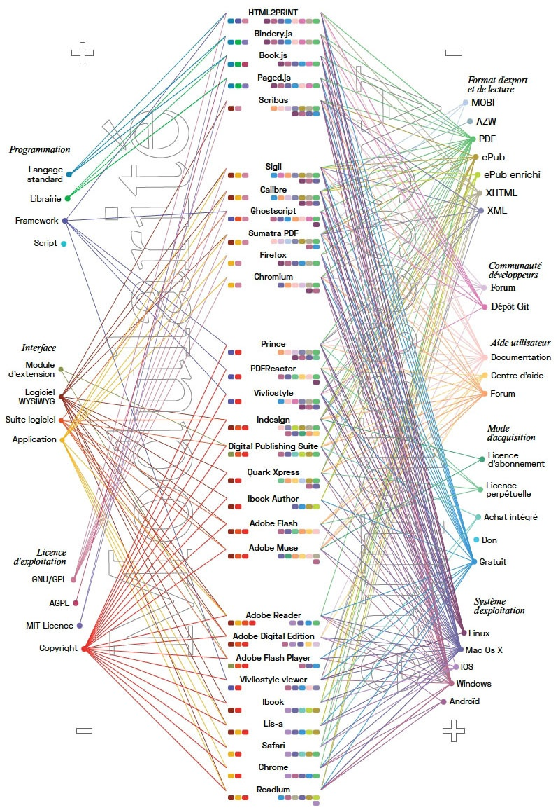[Fig.14-15] dans son article intitulé « Les outils de design graphique » publié dans la revue Science du design n°8, nous pouvons voir comment les formats coopèrent entre eux en fonction de quatre groupes de logiciels : les outils libres de conception, les outils libres de lecture et conversion, les outils propriétaires de conception et les outils propriétaires de lecture et conversion. En effet, les schémas montrent la modularité et l’accessibilité des différents logiciels et leurs extensions selon les caractéristiques suivantes : l’adaptabilité aux besoins du designer, la facilité de diffusion, d’apprentissage et d’interopérabilité63 [63] Possibilité de communication entre deux ou plusieurs systèmes, appareils ou éléments informatiques. Consulté le 02/07/2019. , la variété des formats d’exportations64 [64] Juhel, Quentin. « Les outils du design graphique ». Science du Design n°8. 2018. p.19. Nous remarquons que les logiciels sous licences libres ont beaucoup plus de flexibilité et sont beaucoup plus compatibles avec d’autres plateformes que ceux sous licences propriétaires. Par exemple, les langages du code comme HTML et CSS peuvent être ouvert par n’importe quel logiciel de traitement de texte.
La nouvelle chaîne graphique
Le champ éditorial entre dans le nouveau monde éditorial avec les nouveaux repères qui bouleversent les repères historiques puisque « [...] l’environnement numérique est avant tout le lieu d’une "nouvelle culture" qui, dans ses pratiques, fragilise et déconcerte les modèles actuels ainsi que leurs institutions. »65 [65] Doueihi, Milad. « Le livre à l'heure du numérique : objet fétiche, objet de résistance ». READ/WRITE BOOK. Le livre inscriptible. Consulté le 25/08/2019. . Par ailleurs, nous pouvons voir que le désir d’émancipation du designer graphique face aux logiciels propriétaires favorise l’invention de nouveaux outils et par conséquent le remplacement de la chaîne graphique traditionnelle par une nouvelle logique de gestion d’un projet éditorial. Ces nouveaux outils nous permettent de repenser profondément toute la logique de conception d’un projet mais aussi l’aspect économique de notre métier de graphiste. En effet, le terme de mise en page commence à revêtir un nouveau sens, avec plus de nuances, se trouvant à la charnière de champs différents mais complémentaires : le design graphique, le design numérique, la programmation, les technologies et le web. Cela change notre perception de la création d’un livre en ouvrant de nouveaux paradigmes. Stephane Vial souligne que « Percevoir à l’ère numérique, c’est d’abord être contraint de renégocier l’acte de perception lui-même. C’est une manière de ré-apprendre le sens du réel »66 [66] Vial, Stephan. L’être et l’écran. Comment le numérique change la perception. Op.cit. p.247. De cette manière, on comprend qu’avec la nouvelle chaine graphique il faut repenser notre façon d’appréhender un livre. En effet le livre n’est plus seulement un ensemble de pages et de mots avec une couverture, si seulement il a déjà été cela, mais c’est maintenant, encore plus, un réel objet culturel et artistique qui, tout comme l’ensemble des autres arts, a ses codes, ses formats, mais aussi tout un ensemble de personnes qui les détournent ce qui permet de le faire avancer.
Le passage vers la chaine graphique d’édition issue de numérique
La chaîne graphique d’édition avant le numérique était assez stricte à cause de sa structure séquentielle. Premièrement, les designers graphiques dépendaient d’un logiciel présélectionné pour le travail sur la mise en page. En effet, l’utilisation d’un logiciel privateur ne permet pas de flexibilité. Le designer ne peut pas le remplacer par un autre car il sera dans l’incapacité de continuer son projet sur un autre logiciel car les formats ne le lui permettront pas. Julie Blanc dans sa présentation « Paginer le flux » du 20 août 2018 pour les rencontres de Lure indique que ce fait provoque des « tâches répétitives et peu gratifiantes pour le designer », et une « interopérabilité très faible » et surtout un « processus linéaire». Mais le passage vers des outils libres et indépendants leur permet d’ouvrir de nouveaux horizons dans le domaine de l’impression, notamment par l’apparition de « publication multiplateforme »67 [67] Rencontre de Lure. « Paginer le flux ». 20 août 2018. Consulté le 14/08/2019.. En effet, ce fait correspondait à non-interoperabilité des logiciels qui l’identifiaient strictement comme « de Microsoft Word vers Adobe InDesign » et puis une sortie en PDF68 [68] Fauchié, Antoine, Parisot, Thomas. Repenser les chaînes de publication par l’intégration des pratiques du développement logiciel. Science du Design n°8. 2018. p.47. Dans son ouvrage READ/WRITE BOOK. Le livre inscriptible Marin Dacos69 [69] Dacos, Marin. Read/Write Book. Le livre inscriptible. Consulté le 17/09/2019. décrit le passage vers une nouvelle forme de livre :
« En entrant dans l’ère de l’informatique en réseau, le livre semble appelé à devenir de plus en plus réinscriptible. Il n’est plus seulement séquentiel comme autrefois, dans cette fameuse chaîne du livre qui mène de l’amont vers l’aval en ligne droite. Il est aussi réticulaire. Comme un oignon, il se pare de multiples couches, un ensemble d’informations ajoutées par des dizaines de métiers différents, qui participent à une vaste entreprise d’enrichissement documentaire, et par des auteurs secondaires qui, par leurs inscriptions, contribuent, à toutes les étapes de la vie du texte, à enrichir la grille de lecture du texte, à ajouter des strates supplémentaires au texte initial. »
De cette manière les technologies du {web} ont permis l’interopérabilité, la pérennité des contenus et l’accroissement de l’accessibilité70 [70] Rencontre de Lure. « Paginer le flux ». 20 août 2018. Consulté le 14/08/2019. . À leur tour, les logiciels libres défendent la liberté au sein de ce fort réseau afin de donner aux designers graphiques une plus grande liberté d’expression. Cette nouvelle chaîne graphique devient alors le mélange de multiples étapes additionnées aux outils libres utilisés que le designer a pu moduler volontairement en fonction de ses besoins.
HTML et CSS pour la mise en page
Il est vrai que l’un des plus grands avantages des logiciels libres pour les designers graphiques est avant tout la possibilité d’exécuter le code source. Cette dernière nous offre un matériau à la fois riche et flexible.
Suivre le projet éditorial selon ce concept numérique nous permet de repenser la création de la forme d’un objet-livre. Désormais, les lignes de code transmettent l’objet et nous nous retrouvons devant une nouvelle forme. De plus, cette attitude numérique ne change que la perception du travail et du résultat final. En effet, il est possible de suivre la nouvelle chaîne éditoriale, en fonction des composants du fichier. Nous arrivons donc vers une nouvelle esthétique de fichier : nous écrivons notre design et notre texte dans un rédacteur. Dans son ouvrage « L’écriture sans écriture » Kenneth Goldsmith met en parallèle l’écriture avec le code alphanumérique des fichiers visuels :
« Ce que nous prenons pour des images, des sons ou des déplacements dans le monde des écrans n’est qu’une peau très fine sous laquelle s’empilent des kilomètres et des kilomètres de langage. parfois, comme lors de ce vol, cette peau se perce, et, comme de regarder soudain sous le capot, nous découvrons que notre monde numérique — nos photographie, nos films et vidéos, nos musique, nos textes, notre information — est mue par le langage. Et que toute cette information binaire — la musique, les films, les photos — est faite de langage, des kilomètres er des kilomètres de code alphanumérique. Si vous en voulez la preuve, pensez aux fois où vous avez reçu par erreur, dans un e-mail, un fichier joint .jpg qui ne pouvait être vu en tant qu’image, mais comme du code qui pouvait défiler à l’infini. Ce ne sont que des mots, mais peut-être pas dans un ordre que nous pouvons comprendre : le matériau de base qui a soutenu l’écriture depuis qu’elle est une forme stable est maintenant ce qui est à la base de tous les médias. »71 [71] Goldsmith, Kenneth. L’écriture sans écriture. Du langage à l’ère numérique. Traduit de l’américain par François Bon. Jean Boîte edition. p.25
Quant à l’édition numérique nous pouvons mettre également en parallèles tous les fichiers visuels et sa représentation en forme du code. La perception de l’objet change, on a plus le même contenu, notre contenu est le code qui est composé de multiples éléments-blocs des instruments libres.
En effet, la mise en page peut se baser sur HTML et CSS. Ce langage de balisage et les cascades de styles sont capables d’intervenir le processus de création confortable et riche. L’atout majeur lors de la création du livre avec ces langages est de pouvoir faire un maximum de manipulations avec le code, pas seulement sur le rédacteur de document mais sur le navigateur web. En affichant le code source de la page on a l’accès au {DOM}. Cette possibilité nous permet d’atteindre une nouvelle étape dans l’édition avec les outils libres. De plus, les langages du code HTML et CSS peuvent être ouverts depuis la plupart rédacteur de textes. C’est pourquoi le problème de compilation ne se pose pas dans ce cas. Cela contribue à faciliter le travail avec les fichiers. En créant le document sous HTML et CSS et en l’ouvrant sur le navigateur web, on n’a plus besoin de convertir en format PDF. Nous pouvons envoyer directement vers la machine d’impression via le navigateur web. CSS est un langage qui permet de conserver dans son code les spécificités d’un document imprimé et en même nous afficher une page web avec les spécificités du web. Par exemple, la revue CODE X possède une mise en page qui est faite à l’aide de langages de programmation comme HTML, CSS et JavaScript. Ici aussi, l’impression est réalisée depuis le navigateur web. Ce numéro a été publié à l’occasion du salon de l’édition alternative organisé par PrePostPrint à La Gaîté Lyrique, le 21 octobre 2017. Le gabarit de la revue est 260 × 360 mm et il contient 16 pages. Il a été tiré à 500 exemplaires. Cet exemple nous amène à dire que grâce aux réglages CSS, il serait possible de faire de la mise en page à la fois avec des formats différents, en plusieurs colonnes, puis avec la capacité de pouvoir y intégrer de l’iconographie[Fig.15-17]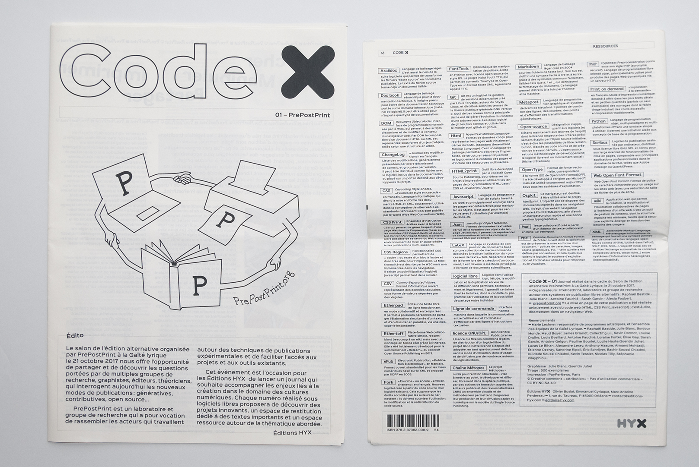[Fig.15-17]. En effet, le CSS est un langage intéressant pour construire une mise en page. Il realise les idées de graphiste sous une forme du code et puis, il la convertit en une forme éditoriale. Les règles du {CSS Print}permettent de préparer le site web pour l’impression. Le designer graphique choisit des réglages à afficher en fonction de la mise en page désirée.
Git
Git joue un rôle important dans la circulation des documents à l’étape de création et de la gestion du projet d’édition à l’aide des logiciels libres et le code notamment. Git est un système de gestion de versions qui permet de faciliter le travail avec les données dynamiques. Ce système permet de garder plusieurs versions d’un document et de revenir vers les versions précédentes. Dans le travail collaboratif, ce système permet de savoir qui a effectué les dernières modifications et à quel moment. En effet, dans la vie professionnelle, les designers graphiques rencontrent souvent le problème du stockage de plusieurs versions d’un seul contenu sur leurs ordinateurs. Par exemple, GitHub se base sur ce système. GitHub est un service web qui effectue l’hébergement de données ainsi que la sauvegarde des versions précédentes et différentes des documents.
Le web est le seul médium qui permet de faire cela : publier sur différents supports de différentes tailles. Cette possibilité offre aux designers un gain de temps au niveau de la fabrication, en effet, cela permet de réduire le stockage des données et de faciliter ensuite la distribution à grande échelle. L’optimisation totale du processus et l’utilisation d’internet comme plateforme permet de simplifier le travail du designer. Le designer graphique gagne du temps, même lors de la préparation d’un document pour l’impression tel que le PDF qui peut désormais être créé par le navigateur web.
Navigateur web comme l’outil de création
Le navigateur web peut être un outil libre de création du contenu. Le navigateur est un moteur d’affichage qui peut refléter la mise en page faite sous les langages différents de la programmation. Il est possible de continuer la création de la mise en page directement sur le navigateur dans la console en choisissant l’inspection du document. De cette manière, en manipulant les chiffres et les lettres, le designer interagit directement avec son projet puis avec le navigateur web en temps réel. Il change les paramètres et voit les modifications en direct. Par ailleurs, il est aussi possible de suivre l’évolution et le progrès de leurs compétences. La modification des réglages d’un fichier à éditer peut changer radicalement le document. La couleur, la taille de la typographie, le format d’ouvrage et autres réglages automatiques qui sont destinés à faire une édition originale et se font directement par le code. De cette manière, les déclinaisons peuvent être différentes selon le goût d’un autre designer ou d’un lecteur qui souhaite obtenir l’édition. Ces modifications peuvent transformer un livre en un autre. John Caserta, designer graphique et professeur du graphisme, remarque qu’en changeant des paramètres sur l’Inspecteur web, le designer obtient un visuel different à chaque fois et cela permet d’obtenir des résultats inattendus. Chaque touche du clavier nous mène vers des fins différentes72 [72] "By altering numbers in the Web Inspector, whole layouts shifted, causing reflows and unexpected crops. Each tap of the keyboard producing a radically different outcome." for / with / in. "Introduction". Consulté le 23/09//2019.. De cette manière, le designer graphique peut créer des objets imprimés comme des affiches, des livres et des flyers. Bindery.js est une librairie javascript qui regroupe des bibliothèques pour la création d’une édition imprimée via le navigateur web. Selon les auteurs de cet outil, ce concept à la possibilité de repenser le processus généralement breveté ainsi que les instruments qui défiaient l’objet-livre. Mais aussi, c’est le processus assez complexe qui permet de comprendre les attentes, les priorités et les standards du fonctionnement d’un navigateur web. Cette bibliothèque permet de produire la structure à des fins de création d’un livre.[Fig.18]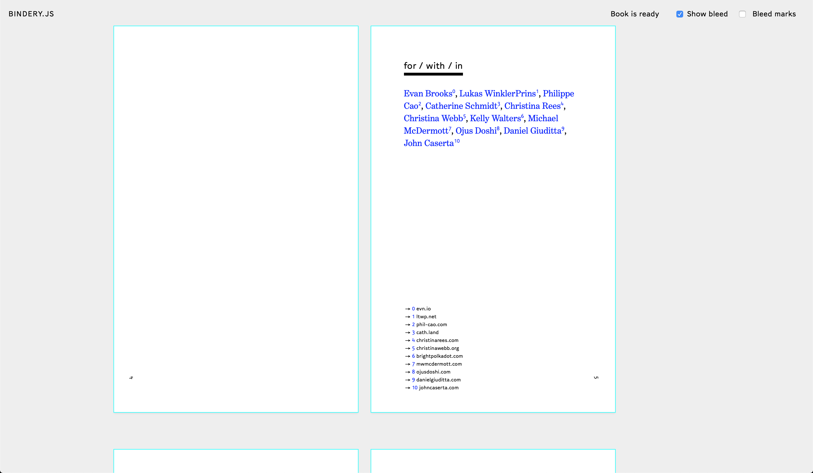[Fig.18]
Le navigateur Firefox, navigateur libre, propose d’utiliser son autre version Firefox Developper Edition pour pouvoir construire la mise en page sur le navigateur web, comprendre et modifier les erreurs du code, suivre les modifications. La nouvelle edition de Firefox peut être intéressent comme le navigateur pour la creation d’une edition car désormais il propose le travail avec la grille CSS, la redaction des figures, la parametrisation de la typographie.
De cette façon, il existe la tendance d’utiliser le navigateur web comme la plateforme pour élaborer la mise en page car le web a permis le travail directement au DOM et l’interaction entre toutes les étapes de travail. Cette interaction riche entre designer et navigateur web a contribué l’apparition de nouvelles plateformes différentes de diffusion du contenu.
Vers la multiforme
La nouvelle chaîne éditoriale offre une nouvelle forme esthétique de l’objet imprimé. La méthode multidisciplinaire et modulaire du travail en ensemble avec le système de versification proposent l’édition multiplateforme où un seul contenu est présenté sous des formes différentes. Le site web, l’ensemble de fichiers HTML et CSS, PDF, EPUB et d’autres formats, présélectionnés par le designer, transmettent le contenu de livre. En effet, le contenu original est représenté par la base de données constituée de texte, d’images, et de videos. Puis, le designer travaille sur la mise en page avec l’aide de plusieurs logiciels composés de langages de code différents, il reconstruit son document en livre.
De cette manière, ici, il peut choisir son propre mode d’affichage de contenu : mise en page fixe, mise en page fluide ou responsive. Selon la chaîne traditionnelle “de Word vers InDesign” et avec l’export PDF, le designer a l’habitude de travailler avec la mise en page cartésienne quand le logiciel simulait l’apparence de livre imprimé. Avec les logiciels libres on peut aussi créer la mise en page fixe ou la mise en page fluide. Dans le premier cas, le designer utilise HTML et CSS pour rassembler les données. Puis, via des outils libres comme Jekyll, il y a la possibilité de transformer ce contenu en page web. Dans le cas de la mise en page fluide, les données sont représentées par le contenu continu. La mise en page du fichier imprimé est responsive et dépend du format d'édition. Ainsi, il existe deux possibilités de traduction de texte quand l’écran est égal à l’impression et quand l’écran n’est pas égalé à l’impression. À titre d’exemple, je voudrais citer le projet Deconstruction de Loraine Furter [Fig.19-20]. Ella a élaboré une edition et un poster pour une conference du studio d’architecture ROTOR. La mise en page des objets imprimés a été fait à l’aide du HTML et CSS. Puis, a partir d’un site web un export en PDF a été fait avec la conversion des couleurs RGB en CMJN et par la suite l’impression d’un poster et d’une edition. De telle façon, la multiplateforme nous amène à la nouvelle relation entre designer et son projet : le designer navigue du numérique à l’imprimée, de l’alphanumérique à l’alphabétique, de l’écran au papier. Nous pouvons circuler entres toutes ces formes en constatant leurs complémentarités. Nous nous retrouvons devant une nouvelle forme de perception74[74]: Goldsmith, Kenneth. L’écriture sans écriture. Du langage à l’ère numérique. Op.cit. p159:
« [...] il y a plus de différences que de similarités, c’est ce qui rend le projet excitant : une même œuvre, réécrite dans un contexte différent devient une œuvre entièrement neuve ».
En effet, le site web, l’application ou l’edition même en portant un seul contenu, représentent les objets différents. Prenons l’exemple du magazine Médor. C’est un magazine belge trimestriel. La politique de ce magazine est d’utiliser entièrement des logiciels libres et des logiciels open source et des langages du code utilisés sur le web, comme HTML et CSS, pour créer une édition. Le collectif de Médor fait la différence avec les autres magazines : il utilise des logiciels open source pour créer les editions. Ce magazine se positionne comme un magazine collaboratif où même les lecteurs influencent le contenu d’édition [Fig.21]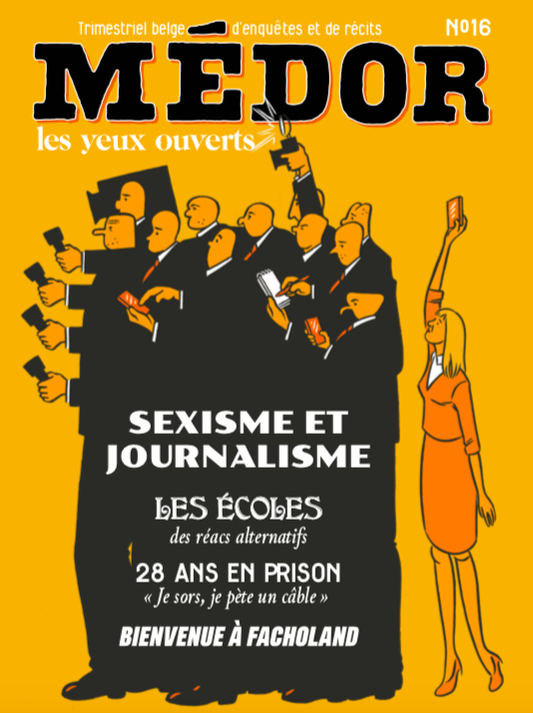[Fig.21]. Quant à la rédaction des textes, le collectif adhère aux idées de former les groupes pour travailler sur le nouveau sans hiérarchie. Cela correspond aux idées d’indépendance dans les récits et les enquêtes. Le contenu de l’édition est également sous licences libres. La multiforme de ce magazine, nous pouvons voir dans la façon collaborative du travail, la mise en page grace aux plusieurs langages du code, diffusion sous les formes différentes : la lecture en ligne, l’edition imprimée.
Dans le cadre de la multiforme, la publication reste toujours entre la version imprimée et numérique. Alessandro Ludovico dans son ouvrage post-digital print la mutation de l'édition depuis 1894 appelle la circulation entre l’imprimée et le numérique comme l’équilibre des pouvoirs. Le résultat de cette circulation est l’impression à la demande qui a ouvert de nouvelles possibilités pour les éditions car le livre est prêt à la vente en quelques jours75 [75] Ludovico, Alessandro. Post-digital print, the Mutation of Publishing since 1894.Op.cit. p.70.
Auto-production
Malheureusement dans le milieu digital, les designers graphiques sont souvent contraints de ne pas avoir le
pouvoir de contrôler leurs logiciels et de n’être que les utilisateurs des logiciels propriétaires76[76] Masure, Antony. « Graphisme en numérique : entre certitudes et incertitudes ». Consulté le 05/08/2019..
Par exemple, PrePostPrint, un groupe de recherche composé par des designers graphiques, pratiquent l’approche
numérique libre pour pouvoir contrôler ses logiciels. Sarah Garcin et Raphaël Bastide en sont les membres. Ils
ont proposé un premier workshop les 6 et 7 avril 2017. L’idée était d’utiliser les logiciels alternatifs car,
selon eux, c’est la possibilité d’adapter des procédés graphiques à chaque nouveau projet. Dans le cadre de ce
workshop, il y était présenté quatre projets de la publication expérimentale. Les participants pouvaient les
tester et échanger autour des enjeux de cette nouvelle pratique. Trois projets présentaient les possibilités de
la collaboration entre HTML et CSS et un autre, PJ Machine de Sarah Garcin était une installation ludique[Fig.22] [Fig.22].
[Fig.22].
Dans un projet de ce workshop — la PJ Machine, ce projet représente une boîte noire avec des boutons. En coopération avec ces derniers, la machine est une sorte d'arcade qui crée une mise en page d’affiches en collaboration avec les autres participants, le tout en temps réel. En effet, cet outil propose une mise en page sous HTML et CSS à l’aide de blocs manipulés par des boutons. Nous pouvons modifier l’alignement vertical ou horizontal, la taille des blocs, l’espacement des textes et par la suite exporter en PDF. Le format sera créé par les éléments du CSS Print et le contenu pourra être remodifié par les algorithmes génératifs du Javascript. Via cette machine, les participants ont pu créer des flyers et des travaux faits dans le cadre de ce workshop. Sarah Garcin a utilisé son instrument de la mise en page PJ Machine pour réaliser une publication Frankenstein Revisited lors d’une résidence au Museum d’histoire naturelle de Bern [Fig.23]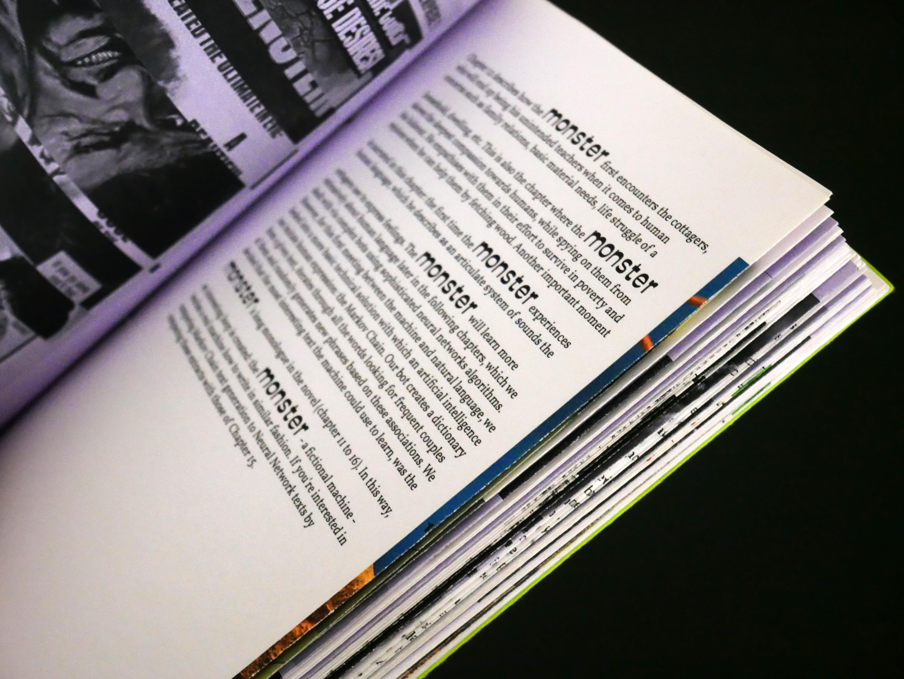[Fig.23]. Cet exemple montre la mise en pratique d’un logiciel qui a été créé par le designer. De telle manière, le designer graphique peut utiliser ses compétences et ses pouvoirs pour éditer un livre. Il ne s’agit pas de devenir le développeur mais la connaissance du code et la capacité de contrôler les outils permettent au designer graphique d’atteindre une certaine autonomie. Désormais, « le code est là au service de l’idée, et non l’inverse »77 [77] Casey Reas & Chandler McWilliams. « Programmer avec Erik van Blokland, Catalogtree, Amanda Cox, Nicholas Felton, FIELD, LUST, Boris Müller, onformative, Jonathan Puckey, Sosolimited et Trafik ». Graphisme en France, 2012. p.26.Consulté le 18/05/2019. .
CONCLUSION
Pour conclure, nous avons vu ce que pouvait potentiellement apporter le logiciel libre que ce soit aux designers mais aussi à l’édition de livres. Les solutions libres permettent l’approche modulaire du travail car on peut les combiner à la volonté. En effet, le designer graphique peut se servir par les différents codes source des outils dont il a besoin, pour ainsi les combiner afin d’obtenir une edition originale. C’est là que le designer graphique commence à réfléchir à son travail car il contrôle ses outils et ne les subit plus. De plus, l’intercompatibilité des logiciels libres permet la mise en place d’un écosystème riche et varié qui assure le fonctionnement des logiciels entre eux comme s’ils n’étaient qu’un. C’est pourquoi la modularité permet une expérimentation continue car on peut ajouter indéfiniment des morceaux de code qui représente des améliorations par leurs nouvelles idées mais qui tous ensemble peuvent servir un projet. Toute la réflexion autour de ce sujet mène vers l’idée que penser un outil est penser le design. Quand le designer crée ses propres outils ou utilise ceux d’autres développeurs, via Github notamment, et les intègrent dans son projet, il s’immerge dans le processus intellectuel de la création. Le designer change sa perception du projet. Il commence à suivre ses propres idées et essaye de les réaliser. En effet en n’utilisant plus de logiciel privateur le designer a la possibilité et presque l’obligation de réfléchir à la conception de son projet, avec les méthodes citées plus tôt. Désormais les lignes du code représentent la nouvelle forme de design graphique. Le designer repense non seulement le processus de gestion d’un projet mais aussi son rôle. En effet, alors qu’avant il se contentait de faire du graphisme, il doit désormais aussi faire du codage. Il ne s’agit pas d’y voir un développeur mais plutôt un « bricoleur » qui utilise ses connaissances mais apprend également constamment des outils qu’il utilise et ainsi connaitre ses logiciels et pouvoir les contrôler afin d’aboutir à un projet de qualité. C’est donc un domaine qui laisse une place constante à la progression. En effet, si aujourd’hui le designer n’arrive pas à créer ou tout du moins compléter son projet comme il le souhaite car il n’a pas toutes les compétences requises pour ce dernier, demain grâce à l’expérimentation et à l’apprentissage, il pourra y arriver. Ainsi les objectifs du design graphique au sein de l’outil libre ne peuvent être que croissants. Enfin, chaque objectif qui sera complété mènera un défi plus complexe pour le designer. Par ce fait la progression devient infinie.
GLOSSAIRE
A
API : abbréviation d'interface de programmation d’application. API est un ensemble de méthodes, de classes, de fonctions et de structures selon lesquelles un programme peut interagir avec un autre.
Application : programme qui est destiné à éxecuter une multitude de tâches et qui est conçu pour interagir avec des utilisateurs
C
Code source : texte d'un programme qui est écrit sous un des langages de programmation ou de balisage est qui est humainement lisible par un programmeur.
CSS : abréviation de Cascading Style Sheets. Ce langage est utilisé pour indiquer les couleurs, les caractères, la disposition du contenu des pages web. Il fonctionne en adéquation avec HTML pour la création de page web.
CSS print : ensemble des règles CSS pour l'impression
D
DOM : interface de programmation qui permet à des programmes et à des scripts d'éxecuter le contenu des pages web. Il est possible de modifier sa structure et sa forme.
Données : représentation formelle d'une information dans un programme adapté à la transmission, à la communication et au traitement. Elle peut représenter le texte ou le code source d'un programme.
E
Epub : acronyme de publication électronique. C'est un format ouvert pour les livres numériques avec l'éxtension .epub. Ce format permet de créer et de diffuser les publications numériques.
F
Format : façon de représenter des données. L'identifiant de format est indiqué à la fin du nom d'un fichier sous forme d'une extention comme par exemple .pdf.
Free Software Fondation (FSF): organisation américaine fondée par Richard Stallman, programmeur du MIT, le 4 octobre 1985. Les objectifs de cette organisation sont de protéger les droits des utilisateurs de programmes informatiques en stimulant l’apparition des logiciels libres.
H
Hacker : un terme emprunté à l'anglais et qui signifie "pirate informatique". Un hacker est une personne qui a beaucoup de connaissances en informatique et qui peut exploiter les fails des logiciels, des sites web, etc. De plus, hacker peut signifier la personne fortement passionnée dans le codage.
HTML (HyperText Markup Language): représente le langage standardisé de balisage de documents dans le web. Ce langage est la base de la programmation d’un site web. Le texte de HTML est interprété par le Navigateur web pour obtenir un texte formaté sur un écran d’ordinateur ou un autre appareil. Les fonctionnalités du langage HTML sont limitées, c’est pour cela qu’il est actuellement utilisé en synergie avec le langage CSS.
J
JavaScript : un langage de programmation qui permet de créer un contenu dynamique qui gère le multimédia et qui anime des images. Ainsi, l’utilisation de JavaScript consiste en une modification dynamique de HTML et CSS.
L
Langage de balisage : séquence des symboles dans un texte qui transmet des information sur la structure de ce texte. Ce sont le texte en soi, les titres, les sous-titres, les listes, le texte souligné. De plus, le langage de balisage permet d’avoir des documents interactifs si la mise en page l’exige. Les langages TeX, HTML, Markdown sont par exemples des langages de balisage
Langage de programmation : langage formel consacré à la création par l'écriture des programmes informatiques. Nous utilisons les langages de programmation pour écrire des logiciels, application etc. Les langages indiquent les règles au à suivre aux ordinateurs et comment organiser la gestion des objets.
M
Markdown : langage élémentaire du balisage qui a été créé pour faire des notes et des brouillons. Il est utilisé dans les systèmes tels que GitHub et GitLab comme langage par défaut de composition de la documentation. Ce langage est souvent utilisé dans les explications pour les outils mais nous pouvons tout de même produire des mises en page simples avec.
Mise en page : est destinée à présenter un contenu textuel avec ses images et autres données de façon équiilibrée afin de permettre la lecture facile.
N
Navigateur web : application informatique capable d'interpréter différents langages et de communiquer avec des serveurs.
O
Open source : le logiciel open source est un logiciel qui fourni le code informatique aux utilisateurs. C’est-à-dire, n’importe qui a l’accès au code source de programme pour le regarder et modifier. Ainsi, les utilisateurs de tel logiciel ont le droit (sous licence libre) de créer les nouveaux logiciels à partir de code ouvert, corriger des erreurs éventuelles et améliorer le programme. Par contre, le logiciel avec le code open source n’est pas obligé d’être gratuit bien que la plupart des outils sous licence libre soient distribués bénévolement.
Open Source Initiative : organisation destinée à l’avancement des programmes libres. OSI a été créé par Bruce Perens et Eric Steven Raymond.
P
PDF (Portable Document Format): un format des documents électroniques. Ce format est destiné à représenter la version électronique d’un fichier à imprimer. PDF permet l’intégration des caractères, des images vectorielles ou matricielles et des fichiers multimédias. De plus, le format peut supporter RGB, CMYK, Grayscale, Lab, Duotone, Bitmap.
PHP (Hypertext Preprocessor): langage open source de script HTML. Ce langage a été spécialement élaboré pour les script de serveur web. L’un des avantages de PHP est la possibilité de créer des pages web dynamiques. Avec PHP les utilisateurs obtiennent la capacité de créer des applications web de qualité rapidement et simplement. De plus, c’est assez simple de les modifier et de les supporter après la réalisation.
Page web : document accessible à l'aide d'un navigateur web. Une page web type représente un document textuel ou non sous HTML ou autres langages, et qui permet de transmettre une multitude d'information.
Python : langage de programmation qui est utilisé généralement dans le développement des applications et des serveur web. Ce langage dispose de multiples bibliothèques aux possibilités différentes intéressantes non seulement pour les développeurs de programmes mais pour aussi les designers. Un des buts de python est de contribuer à la simplification de la progammation. Ce langage support le travail avec Java.
S
Serveur web : un serveur web est un serveur informatique qui répond à des requêtes du World Wide Web, en utilisant principalement le protocole HTTP. Il y répond par des pages web.
Site web : un ensemble de pages web.
Script : un script désigne un programme chargé d'exécuter une action.
T
TeX : système de balisage de documentation. Le plus souvent nous pouvons rencontrer la bibliothèque LaTeX qui est la plus grande collection de macro-commandes pour TeX. LaTeX permet d’effectuer les actions avec des commandes déjà connus grâce auxquelles le programmeur accélère son travail.
W
Web (World Wide Web ou www): système hypertexte fonctionnant sur le réseau Internet.
wiki : site web collaboratif qui permet à n'importe lequel de ses utilisateurs de modifier ses pages web. Ces sites ont principalement pour but de répandre la connaissance dans divers domaines. Il existe Wikipédia mais il en existe bien d'autres site sur des thèmes plus précis avec le même fonctionnement.
ICONOGRAPHIE
TABLE DES IMAGES
Fig. 1. Quatre libertés de Velvetyne Type Foundry, affiche realisé par Jeremy Landes-Nones, 2016. https://www.velvetyne.fr/about."
Fig. 2. l'affiche pour le Théâtre la Balsamine, saison 2014-2015, realisé sur HTML2PRINT par Open Source Publishing
Fig. 3-6. les dessins réalisés lors de l'Athelier Gutenbug. Bonjour Monde, 2017
Fig. 7. L'interface du logiciel Ethertoff. Open Source Publishing
Fig. 8. Le Classisme : une introduction, Edward W. Saïd et Joe Scanlan. < o > future < o >. 2015. Version en ligne
Figure 9-10. Les images réalisées par Antony Masure pour montrer la carachtère ridicule des logiciels propriètaires.
Fig.11. Processing. L’espace de travail. L'onglet à gauche avec le code et l'onglet à droite avec la prévisualisation.
Fig. 12-15. Le catalogue et les flyers pour la galerie Constant. Luuse. 2017
Fig. 16-19. L’edition pour l’exposition Tous, des sang-mêlés à MACVAL, 2017. Figures Libres
Fig.20-22. La mise en page de la publication .Txt des Beaux-arts de Valence, Bonjour Monde. Éditée par B42, 2019.
Figure 20-22. Les couvertures pour les ouvrages de la maison d’éditions Faber Finds. Le code est fait par Karsten Schmidt; le design des couvertures est fait par Marian Bantjes.
Figure 26-27. La modularité des logiciels. Quentin Juhel, « Les outils du design graphique ». Science du Design n°8.
Fig.28-30. Code X n°1 : PREPOSTPRINT. HYX, 2017
Figure 31. L’interface de l’outil libre pour la mise en page Bindery.js, 2014.
Figure 32-33. Le site d’Internet, l’édition et l’affiche. Deconstruction. Loraine Furter, 2017.
Figure 34. Le magazine Médor n°16, 2019.
Figure 35. La PJ Machine. Sarah Garcin, 2016-2019.
Figure 36-38. Sarah Garcin. L’édition Frankenstein Revisited, Museum d’histoire naturelle de Bern, 2016.
BIBLIOGRAPHIE
Ouvrages
Bihanic, David. Data design : les données comme matériau de création; Exposition 1, 2, 3 Data-. 4 mai - 6 octobre 2018. Fondation Groupe EDF. Paris : Fondation Électricité de France
Broca, Sebastien. Utopie du logiciel libre.Du bricolage informatique à la réinvention sociale. Neuvy-en-Champagne, Éd. Le Passager clandestin, 2013.
Goldsmith, Kenneth. L’écriture sans écriture. Du langage à l’ère numérique. Traduit de l’américain par François Bon. Jean Boîte edition.
Hayles, Nathalie K. Troisième interlude : Récit et base de données. Les médias numériques en tant que formes.
Illich, Ivan. La convivialité. Paris : Éditions Points, 2014.
Lire à l’écran, Contribution du design aux pratique at aux apprentissages des savoirs dans la culture numérique. B42, 2011.
Lantenois, Annick. Le vertige de funambule. Le design graphique entre économie et moral. B42, 2010.
Lantenois, Annick, Rouffineau, Gilles. Voir l’architecture. Contribution du design à la construction des savoirs. Paris : B42, 2014.
Lantenois, Annick. .Txt3. Paris : B42, 2019.
Ludovico, Alessandro.Post-digital print, the Mutation of Publishing since 1894. ONOMATOPEE 77, 2012.
Maeda, John. Code de creation. Thames&Hudson, 2004
Masure, Antony. Design et humanités numériques. Edition B42, 2017
Migayrou, Frederic. Coder le monde, Mutation, Création. HYX, 2018
Mugnier, Patrice, HO Kuei Yu. Design interactif. Eyrolles, 2012.
Rouffineau, Gilles. Transmettre l’histoire. Contribution du design à la production des savoirs. Paris : B42, 2009.
Smet, Catherine (de). Pour une critique du design graphique. Paris : B42, 2012.
Stiegler, Bernard. Le design de nos existences à l’epoque de l’innovation ascendante. Mille et une nuit, 2008
Vial, Stephan. L’être et l’écran. Comment le numérique change la perception. PUF, 2017
Williams, Sam. Free as in Freedom: Richard Stallman’s Crusade for Free Software. O’Reilly & Associates, Inc, 2002.
Magazines
Back office n°1. Paris : B42, 2017.
Back office n°2. Paris : B42, 2017.
Back office n°3. Paris : B42, 2019.
Code X n°1 : PREPOSTPRINT. HYX, 2017
Webographie
Arrubarrena, Béa. « L’écosystème numérique de la datavisualisation ».
ARTE. « Internet ou la révolution du partage ».
Bayart, Benjamin. OPENOFFICE.ORG, pourquoi pas ?
Bouillon, Nicolas, Nussbaum, Lucas Petazzoni, Thomas. Livret du libre
Chancogne, Thierry. « Le design graphique est-il un outil critique ? ». Consulté le 15/05/2019.
Chartier, Roger. « L’avenir numérique du livre » . Consulté le 10/05/2019.
Cosmo (di), Roberto. Manifeste pour une creation artistique libre dans un Internet libre . 2001.
André, Christoph. « Vers un design libre ». 2011.
Dacos, Marin. Read/Write Book. Le livre inscriptible . OpenEdition Press, 2010.
Rouffineau, Gilles. « Entre jeu et récit, les conditions de l’expérience esthétique dans les éditions numériques off-line ».
Graham, PAUL. « The Word "Hacker" ».
« AFUL : Libre ou Open Source ? ».
Masure, Antony. « Graphisme en numérique : entre certitudes et incertitudes ».
Masure, Antony. « Adobe : le créatif au pouvoir ».
Masure, Antony. « Visual Culture. Open Source Publishing, Git et le design graphique » .
Masure, Antony. « Programmer des programmes (Firefox OS et GitHub) ».
Masure, Antony. « Thèse : Le design des programmes, des façons de faire du numérique ».
Masure, Antony. « L’imprévu des programmes ». conférence aux Rencontres de Lure.
Stallman, Richard M., « Why schools should use exclusively free software ». dernière version mise en ligne le 05/07/2006,
Stiegler Bernard. « Le désir asphyxié, ou comment l’industrie culturelle détruit l’individu ». Le Monde diplomatique, Juin 2004. Schumacher, Patrik. « Parametricism as style - parametricist manifeste ». Consulté le 07//10/2019. Fetro, Sofie. « OUTILS NUMÉRIQUES ARTISANALEMENT MODIFIÉS » . 2011. Cette version est une impression générée à l'aide de l'outil libre Bindery.js, par le site internet créé pour
cette recherche dont j’ai assuré l’intégralité du codage. La mise en page est faite entièrement à l'aide des
technologies web : HTML, CSS, Javascript. Merci de le consulter à cette adresse web : iulialukina.com Impmprimé à l'ESAD de Reims, 2020COLOPHON
Production
Code source
Vous pouvez consulter et télècharger le code source du site sur https://github.com/iulialkn/memoire
Je remercie Rozenn Canevet pour m'avoir soutenue pendant la redaction de ce memoire. je voudrais remercier aussi Laurent Mezaros, Olaf Avenati, Vanina Pinter. Merci beaucoup à Manon Royer, Charlotte Tanguy, Cécile Lenrouilly, Aline Riehl, Clarisse Espada, Léa Gastaldi, Manon Houdard, Bertrand Lacoste pour la relecture attentive de mon mémoire. Je remercie toute ma famille.
Ce mémoire présente une réflexion au sujet de la modification de la chaîne graphique éditoriale par l’usage des logiciels libres dans la création d’un objet livre. Les solutions libres mènent vers de nouvelles approches et méthodes dans le processus d’édition et influencent le design graphique en le rendant plus expérimental. Ce qui mène à se demander comment l’utilisation des logiciels libres et l’expérimentation avec ces derniers peuvent renouveler la manière d’éditer un livre ? En mettant en lumière l’apprentissage et le bricolage, la culture libre apporte de nouveaux défis dans la création d’une édition. La possibilité de construire les étapes de travail en fonction des besoins bouleverse la façon séquentielle de travailler en rendant le travail modulaire. À son tour, la nouvelle multiforme d’une édition issue du web propose des solutions inédites pour la publication. De cette manière, les outils libres deviennent un instrument puissant et/ou matière flexible dans les mains de designer graphique ce qui nous mène vers l’idée que penser un outil est penser le design.